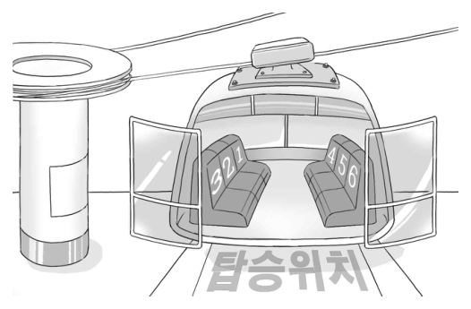
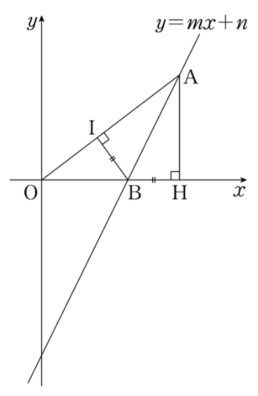
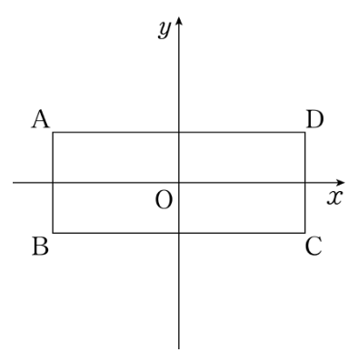

생성기 숫자판 3/6 · G2H-03#0두 집합 $A=\left\{6,\ 8,\ 10,\ 13\right\}$, $B=\left\{1,\ 10,\ 14\right\}$에 대하여 집합 $A\cup B$의 모든 원소의 합으로 옳은 것을 고르세요.
① $52$② $53$③ $54$④ $55$⑤ $56$
정답① $52$ $A\cup B=\left\{1,\ 6,\ 8,\ 10,\ 13,\ 14\right\}$이므로 모든 원소의 합은 $1+6+8+10+13+14=52$
숫자: 원본 1 2 3 3 5 → 쌍둥이 6 8 10 13 1 10 14 · 같은 수: 1
생성기 숫자판 4/6 · G2H-03#0두 집합 $A=\left\{6,\ 8,\ 9,\ 10,\ 14,\ 15\right\}$, $B=\left\{4,\ 5,\ 8,\ 10,\ 16\right\}$에 대하여 집합 $A\cap B$의 모든 원소의 합으로 옳은 것을 고르세요.
① $15$② $16$③ $17$④ $18$⑤ $19$
정답④ $18$ $A\cap B=\left\{8,\ 10\right\}$이므로 모든 원소의 합은 $8+10=18$
생성기 숫자판 1/5 · G2H-02#6이차부등식 $x^{2}-8x+a\le 0$의 해가 $b\le x\le 9$일 때, $a+b$의 값으로 옳은 것을 고르세요. (단, $a$, $b$는 상수입니다.)
① $-13$② $-12$③ $-11$④ $-10$⑤ $-9$
정답④ $-10$ 해가 $-1\le x\le 9$이므로 $x^{2}-8x+a=\left(x+1\right)\left(x-9\right)$ $b=-1$, $a=-1\times 9=-9$ 따라서 $a+b=-10$
숫자: 원본 8 0 6 → 쌍둥이 8 0 9 · 같은 수: 0 8
생성기 숫자판 2/5 · G2H-02#6이차부등식 $x^{2}-2x+a\le 0$의 해가 $b\le x\le 5$일 때, $a+b$의 값으로 옳은 것을 고르세요. (단, $a$, $b$는 상수입니다.)
① $-18$② $-17$③ $-16$④ $-15$⑤ $-14$
정답① $-18$ 해가 $-3\le x\le 5$이므로 $x^{2}-2x+a=\left(x+3\right)\left(x-5\right)$ $b=-3$, $a=-3\times 5=-15$ 따라서 $a+b=-18$
숫자: 원본 8 0 6 → 쌍둥이 2 0 5 · 같은 수: 0
생성기 숫자판 3/5 · G2H-02#6이차부등식 $x^{2}-8x+a\le 0$의 해가 $b\le x\le 7$일 때, $a+b$의 값으로 옳은 것을 고르세요. (단, $a$, $b$는 상수입니다.)
① $6$② $7$③ $8$④ $9$⑤ $10$
정답③ $8$ 해가 $1\le x\le 7$이므로 $x^{2}-8x+a=\left(x-1\right)\left(x-7\right)$ $b=1$, $a=1\times 7=7$ 따라서 $a+b=8$
숫자: 원본 8 0 6 → 쌍둥이 8 0 7 · 같은 수: 0 8
생성기 숫자판 4/5 · G2H-02#6이차부등식 $x^{2}-7x+a\le 0$의 해가 $b\le x\le 6$일 때, $a+b$의 값으로 옳은 것을 고르세요. (단, $a$, $b$는 상수입니다.)
① $6$② $7$③ $8$④ $9$⑤ $11$
정답② $7$ 해가 $1\le x\le 6$이므로 $x^{2}-7x+a=\left(x-1\right)\left(x-6\right)$ $b=1$, $a=1\times 6=6$ 따라서 $a+b=7$
숫자: 원본 8 0 6 → 쌍둥이 7 0 6 · 같은 수: 0 6
생성기 숫자판 5/5 · G2H-02#6이차부등식 $x^{2}-6x+a\le 0$의 해가 $b\le x\le 8$일 때, $a+b$의 값으로 옳은 것을 고르세요. (단, $a$, $b$는 상수입니다.)
① $-20$② $-19$③ $-18$④ $-17$⑤ $-16$
정답③ $-18$ 해가 $-2\le x\le 8$이므로 $x^{2}-6x+a=\left(x+2\right)\left(x-8\right)$ $b=-2$, $a=-2\times 8=-16$ 따라서 $a+b=-18$
숫자: 원본 8 0 6 → 쌍둥이 6 0 8 · 같은 수: 0 6 8
8. 2019년 3월 가형 8번 · 3점 · 고1 범위 · 순열과 조합 · G2H-05b#9
원본 (내부용)$9$개의 숫자 $0$, $0$, $0$, $1$, $1$, $1$, $1$, $1$, $1$을 $0$끼리는 어느 것도 이웃하지 않도록 일렬로 나열하여 만들 수 있는 아홉 자리의 자연수의 개수는? [3점]
① $12$② $14$③ $16$④ $18$⑤ $20$
원본 정답 ⑤
원본 풀이 (내부용)[출제의도] 조합을 이용하여 조건에 맞는 자연수의 개수를 구한다.
자연수의 첫 자리수는 0이 될 수 없으므로 1이다.
\(
1,\ \square,\ 1,\ \square,\ 1,\ \square,\ 1,\ \square,\ 1,\ \square
\)
나머지 5개의 1의 좌우에 6개의 빈자리가 있다. 이 중 3개의 0을 넣으면 0끼리는 어느 것도 이웃하지 않는 아홉 자리의 자연수를 만들 수 있다. 따라서 구하는 자연수의 개수는
\(
{}_6C_3=\frac{6\times5\times4}{3\times2\times1}=20
\)
생성기 숫자판 1/6 · G2H-05b#9$5$개의 숫자 $0$, $1$, $1$, $1$, $1$을 $0$끼리는 어느 것도 이웃하지 않도록 일렬로 나열하여 만들 수 있는 $5$자리의 자연수의 개수로 옳은 것을 고르세요.
① $2$② $3$③ $4$④ $5$⑤ $6$
정답③ $4$ $1$ $4$개를 먼저 나열하면 그 사이와 양 끝에 $5$개의 자리가 생깁니다. 맨 앞자리에는 $0$이 올 수 없으므로 나머지 $4$개의 자리 중 $1$개를 택하여 $0$을 하나 넣습니다. ${}_{4}\mathrm{C}_{1}=4$
9. 2019년 3월 가형 9번 · 3점 · 고1 범위 · 유리함수와 무리함수 · G2H-04#4
원본 (내부용)함수 $f(x)= \sqrt{2x-4} +3$에 대하여 $f^{-1} (5)$의 값은? [3점]
① $\frac{5}{2}$② $3$③ $\frac{7}{2}$④ $4$⑤ $\frac{9}{2}$
원본 정답 ④
원본 풀이 (내부용)[출제의도] 무리함수에서 역함수의 함숫값을 구한다.
함수 \(f(x)=\sqrt{2x-4}+3\)에서 \(f^{-1}(5)=k\)라 하면
\(
f(k)=5
\)
\(
\sqrt{2k-4}+3=5
\)
\(
\sqrt{2k-4}=2
\)
\(
2k-4=4
\)
따라서 \(k=4\)이므로 \(f^{-1}(5)=4\).
생성기 숫자판 1/6 · G2H-04#4함수 $f\left(x\right)=\sqrt{2x-1}+3$에 대하여 $f^{-1}\left(6\right)$의 값으로 옳은 것을 고르세요.
① $5$② $\frac{11}{2}$③ $6$④ $\frac{13}{2}$⑤ $7$
정답① $5$ $f^{-1}\left(6\right)=k$라 하면 $f\left(k\right)=6$ $\sqrt{2k-1}+3=6$에서 $\sqrt{2k-1}=3$, $2k-1=9$ 따라서 $k=5$
숫자: 원본 2 4 3 1 5 → 쌍둥이 2 1 3 1 6 · 같은 수: 1 2 3
생성기 숫자판 2/6 · G2H-04#4함수 $f\left(x\right)=\sqrt{x-3}+2$에 대하여 $f^{-1}\left(6\right)$의 값으로 옳은 것을 고르세요.
① $\frac{35}{2}$② $18$③ $\frac{37}{2}$④ $19$⑤ $20$
정답④ $19$ $f^{-1}\left(6\right)=k$라 하면 $f\left(k\right)=6$ $\sqrt{k-3}+2=6$에서 $\sqrt{k-3}=4$, $k-3=16$ 따라서 $k=19$
숫자: 원본 2 4 3 1 5 → 쌍둥이 3 2 1 6 · 같은 수: 1 2 3
생성기 숫자판 3/6 · G2H-04#4함수 $f\left(x\right)=\sqrt{x-1}+2$에 대하여 $f^{-1}\left(6\right)$의 값으로 옳은 것을 고르세요.
① $\frac{31}{2}$② $16$③ $\frac{33}{2}$④ $17$⑤ $18$
정답④ $17$ $f^{-1}\left(6\right)=k$라 하면 $f\left(k\right)=6$ $\sqrt{k-1}+2=6$에서 $\sqrt{k-1}=4$, $k-1=16$ 따라서 $k=17$
숫자: 원본 2 4 3 1 5 → 쌍둥이 1 2 1 6 · 같은 수: 1 2
생성기 숫자판 4/6 · G2H-04#4함수 $f\left(x\right)=\sqrt{x-1}+4$에 대하여 $f^{-1}\left(7\right)$의 값으로 옳은 것을 고르세요.
① $\frac{17}{2}$② $9$③ $\frac{19}{2}$④ $10$⑤ $11$
정답④ $10$ $f^{-1}\left(7\right)=k$라 하면 $f\left(k\right)=7$ $\sqrt{k-1}+4=7$에서 $\sqrt{k-1}=3$, $k-1=9$ 따라서 $k=10$
숫자: 원본 2 4 3 1 5 → 쌍둥이 1 4 1 7 · 같은 수: 1 4
생성기 숫자판 5/6 · G2H-04#4함수 $f\left(x\right)=\sqrt{x-1}+2$에 대하여 $f^{-1}\left(4\right)$의 값으로 옳은 것을 고르세요.
① $3$② $\frac{7}{2}$③ $4$④ $\frac{9}{2}$⑤ $5$
정답⑤ $5$ $f^{-1}\left(4\right)=k$라 하면 $f\left(k\right)=4$ $\sqrt{k-1}+2=4$에서 $\sqrt{k-1}=2$, $k-1=4$ 따라서 $k=5$
숫자: 원본 2 4 3 1 5 → 쌍둥이 1 2 1 4 · 같은 수: 1 2 4
생성기 숫자판 6/6 · G2H-04#4함수 $f\left(x\right)=\sqrt{3x-2}+1$에 대하여 $f^{-1}\left(6\right)$의 값으로 옳은 것을 고르세요.
① $9$② $\frac{19}{2}$③ $10$④ $\frac{21}{2}$⑤ $11$
정답① $9$ $f^{-1}\left(6\right)=k$라 하면 $f\left(k\right)=6$ $\sqrt{3k-2}+1=6$에서 $\sqrt{3k-2}=5$, $3k-2=25$ 따라서 $k=9$
숫자: 원본 2 4 3 1 5 → 쌍둥이 3 2 1 1 6 · 같은 수: 1 2 3
10. 2019년 3월 가형 10번 · 3점 · 고1 범위 · 경우의 수 · G2M10-01#7
원본 (내부용)그림과 같이 한 줄에 $3$개씩 모두 $6$개의 좌석이 있는 케이블카가 있다. 두 학생 $\mathrm{A}$, $\mathrm{B}$를 포함한 $5$명의 학생이 이 케이블카에 탑승하여 $\mathrm{A}$, $\mathrm{B}$는 같은 줄의 좌석에 앉고 나머지 세 명은 맞은편 줄의 좌석에 앉는 경우의 수는? [3점]

① $48$② $54$③ $60$④ $66$⑤ $72$
원본 정답 ⑤
원본 풀이 (내부용)[출제의도] 곱의 법칙과 순열을 이용하여 실생활 문제를 해결한다.
A, B가 앉는 줄을 선택하는 경우의 수는 2, 한 줄에 놓인 3개의 좌석에서 2개의 좌석을 택하여 앉는 경우의 수는 \({}_3P_2=3\times2=6\)이다. 그러므로 A, B가 같은 줄의 좌석에 앉는 경우의 수는 \(2\times6=12\)이다.
나머지 세 명이 앉던 줄의 좌석에 앉는 경우의 수는 \(3!=6\)이다. 따라서 구하는 경우의 수는
\(
12\times6=72
\)
이다.
생성기 숫자판 1/6 · G2M10-01#7한 줄에 $4$개씩 두 줄로 모두 $8$개의 좌석이 있는 케이블카가 있습니다. 두 학생 $\mathrm{A}$, $\mathrm{B}$를 포함한 $5$명의 학생이 이 케이블카에 탑승하여 $\mathrm{A}$, $\mathrm{B}$는 같은 줄의 좌석에 앉고 나머지 $3$명은 맞은편 줄의 좌석에 앉는 경우의 수로 옳은 것을 고르세요.
① $528$② $552$③ $576$④ $600$⑤ $624$
정답③ $576$ $\mathrm{A}$, $\mathrm{B}$가 앉을 줄을 고르는 경우의 수는 $2$ 그 줄의 $4$개의 좌석 중 두 자리에 $\mathrm{A}$, $\mathrm{B}$가 앉는 경우의 수는 ${}_{4}\mathrm{P}_{2}=12$ 맞은편 줄의 $4$개의 좌석에 나머지 $3$명이 앉는 경우의 수는 ${}_{4}\mathrm{P}_{3}=24$ 따라서 구하는 경우의 수는 $2\times 12\times 24=576$
숫자: 원본 3 6 5 → 쌍둥이 4 8 5 3 · 같은 수: 3 5
생성기 숫자판 2/6 · G2M10-01#7한 줄에 $8$개씩 두 줄로 모두 $16$개의 좌석이 있는 케이블카가 있습니다. 두 학생 $\mathrm{A}$, $\mathrm{B}$를 포함한 $6$명의 학생이 이 케이블카에 탑승하여 $\mathrm{A}$, $\mathrm{B}$는 같은 줄의 좌석에 앉고 나머지 $4$명은 맞은편 줄의 좌석에 앉는 경우의 수로 옳은 것을 고르세요.
① $188112$② $188136$③ $188160$④ $188184$⑤ $188208$
정답③ $188160$ $\mathrm{A}$, $\mathrm{B}$가 앉을 줄을 고르는 경우의 수는 $2$ 그 줄의 $8$개의 좌석 중 두 자리에 $\mathrm{A}$, $\mathrm{B}$가 앉는 경우의 수는 ${}_{8}\mathrm{P}_{2}=56$ 맞은편 줄의 $8$개의 좌석에 나머지 $4$명이 앉는 경우의 수는 ${}_{8}\mathrm{P}_{4}=1680$ 따라서 구하는 경우의 수는 $2\times 56\times 1680=188160$
숫자: 원본 3 6 5 → 쌍둥이 8 16 6 4 · 같은 수: 6
생성기 숫자판 3/6 · G2M10-01#7한 줄에 $9$개씩 두 줄로 모두 $18$개의 좌석이 있는 케이블카가 있습니다. 두 학생 $\mathrm{A}$, $\mathrm{B}$를 포함한 $7$명의 학생이 이 케이블카에 탑승하여 $\mathrm{A}$, $\mathrm{B}$는 같은 줄의 좌석에 앉고 나머지 $5$명은 맞은편 줄의 좌석에 앉는 경우의 수로 옳은 것을 고르세요.
① $2177280$② $2177304$③ $2177328$④ $2177352$⑤ $2177376$
정답① $2177280$ $\mathrm{A}$, $\mathrm{B}$가 앉을 줄을 고르는 경우의 수는 $2$ 그 줄의 $9$개의 좌석 중 두 자리에 $\mathrm{A}$, $\mathrm{B}$가 앉는 경우의 수는 ${}_{9}\mathrm{P}_{2}=72$ 맞은편 줄의 $9$개의 좌석에 나머지 $5$명이 앉는 경우의 수는 ${}_{9}\mathrm{P}_{5}=15120$ 따라서 구하는 경우의 수는 $2\times 72\times 15120=2177280$
숫자: 원본 3 6 5 → 쌍둥이 9 18 7 5 · 같은 수: 5
생성기 숫자판 4/6 · G2M10-01#7한 줄에 $6$개씩 두 줄로 모두 $12$개의 좌석이 있는 케이블카가 있습니다. 두 학생 $\mathrm{A}$, $\mathrm{B}$를 포함한 $8$명의 학생이 이 케이블카에 탑승하여 $\mathrm{A}$, $\mathrm{B}$는 같은 줄의 좌석에 앉고 나머지 $6$명은 맞은편 줄의 좌석에 앉는 경우의 수로 옳은 것을 고르세요.
① $43152$② $43176$③ $43200$④ $43224$⑤ $43248$
정답③ $43200$ $\mathrm{A}$, $\mathrm{B}$가 앉을 줄을 고르는 경우의 수는 $2$ 그 줄의 $6$개의 좌석 중 두 자리에 $\mathrm{A}$, $\mathrm{B}$가 앉는 경우의 수는 ${}_{6}\mathrm{P}_{2}=30$ 맞은편 줄의 $6$개의 좌석에 나머지 $6$명이 앉는 경우의 수는 ${}_{6}\mathrm{P}_{6}=720$ 따라서 구하는 경우의 수는 $2\times 30\times 720=43200$
숫자: 원본 3 6 5 → 쌍둥이 6 12 8 6 · 같은 수: 6
생성기 숫자판 5/6 · G2M10-01#7한 줄에 $3$개씩 두 줄로 모두 $6$개의 좌석이 있는 케이블카가 있습니다. 두 학생 $\mathrm{A}$, $\mathrm{B}$를 포함한 $4$명의 학생이 이 케이블카에 탑승하여 $\mathrm{A}$, $\mathrm{B}$는 같은 줄의 좌석에 앉고 나머지 $2$명은 맞은편 줄의 좌석에 앉는 경우의 수로 옳은 것을 고르세요.
① $48$② $54$③ $60$④ $66$⑤ $72$
정답⑤ $72$ $\mathrm{A}$, $\mathrm{B}$가 앉을 줄을 고르는 경우의 수는 $2$ 그 줄의 $3$개의 좌석 중 두 자리에 $\mathrm{A}$, $\mathrm{B}$가 앉는 경우의 수는 ${}_{3}\mathrm{P}_{2}=6$ 맞은편 줄의 $3$개의 좌석에 나머지 $2$명이 앉는 경우의 수는 ${}_{3}\mathrm{P}_{2}=6$ 따라서 구하는 경우의 수는 $2\times 6\times 6=72$
숫자: 원본 3 6 5 → 쌍둥이 3 6 4 2 · 같은 수: 3 6
생성기 숫자판 6/6 · G2M10-01#7한 줄에 $5$개씩 두 줄로 모두 $10$개의 좌석이 있는 케이블카가 있습니다. 두 학생 $\mathrm{A}$, $\mathrm{B}$를 포함한 $4$명의 학생이 이 케이블카에 탑승하여 $\mathrm{A}$, $\mathrm{B}$는 같은 줄의 좌석에 앉고 나머지 $2$명은 맞은편 줄의 좌석에 앉는 경우의 수로 옳은 것을 고르세요.
① $728$② $752$③ $776$④ $800$⑤ $824$
정답④ $800$ $\mathrm{A}$, $\mathrm{B}$가 앉을 줄을 고르는 경우의 수는 $2$ 그 줄의 $5$개의 좌석 중 두 자리에 $\mathrm{A}$, $\mathrm{B}$가 앉는 경우의 수는 ${}_{5}\mathrm{P}_{2}=20$ 맞은편 줄의 $5$개의 좌석에 나머지 $2$명이 앉는 경우의 수는 ${}_{5}\mathrm{P}_{2}=20$ 따라서 구하는 경우의 수는 $2\times 20\times 20=800$
숫자: 원본 3 6 5 → 쌍둥이 5 10 4 2 · 같은 수: 5
11. 2019년 3월 가형 11번 · 3점 · 고1 범위 · 여러 가지 방정식과 부등식 · G2H-02b#9
원본 (내부용)모든 실수 $x$에 대하여 부등식 $x^{2} -2kx+2k+15\ge 0$ 이 성립하도록 하는 정수 $k$의 개수는? [3점]
① $7$② $9$③ $11$④ $13$⑤ $15$
원본 정답 ②
원본 풀이 (내부용)[출제의도] 판별식을 이용하여 절대부등식이 성립하도록 하는 정수 \(k\)의 개수를 구한다.
이차방정식
\(
x^2-2kx+2k+15=0
\)
의 판별식을 \(D\)라 하자.
모든 실수 \(x\)에 대하여 부등식 \(x^2-2kx+2k+15\geq0\)이 성립하려면 \(D\leq0\)이어야 한다.
\(
\frac D4=(-k)^2-1\times(2k+15)\leq0
\)
\(
k^2-2k-15\leq0
\)
\(
(k-5)(k+3)\leq0
\)
\(
-3\leq k\leq5
\)
따라서 정수 \(k\)는 \(-3,-2,-1,\ldots,5\)이므로 그 개수는 9이다.
생성기 숫자판 1/6 · G2H-02b#9모든 실수 $x$에 대하여 부등식 $x^2-2kx+8k-7\ge 0$이 성립하도록 하는 정수 $k$의 개수로 옳은 것을 고르세요.
① $5$② $6$③ $7$④ $8$⑤ $9$
정답③ $7$ 판별식을 $D$라 하면 $\frac{D}{4}=k^2-(8k-7)\le 0$ $k^2-8k+7\le 0$, $\left(k-(1)\right)\left(k-(7)\right)\le 0$ $1\le k\le 7$이므로 정수 $k$의 개수는 $7$
숫자: 원본 2 2 15 0 → 쌍둥이 2 8 7 0 · 같은 수: 0 2
생성기 숫자판 2/6 · G2H-02b#9모든 실수 $x$에 대하여 부등식 $x^2-2kx+4k+12\ge 0$이 성립하도록 하는 정수 $k$의 개수로 옳은 것을 고르세요.
① $7$② $8$③ $9$④ $10$⑤ $11$
정답③ $9$ 판별식을 $D$라 하면 $\frac{D}{4}=k^2-(4k+12)\le 0$ $k^2-4k-12\le 0$, $\left(k-(-2)\right)\left(k-(6)\right)\le 0$ $-2\le k\le 6$이므로 정수 $k$의 개수는 $9$
숫자: 원본 2 2 15 0 → 쌍둥이 2 4 12 0 · 같은 수: 0 2
생성기 숫자판 3/6 · G2H-02b#9모든 실수 $x$에 대하여 부등식 $x^2-2kx-9k+10\ge 0$이 성립하도록 하는 정수 $k$의 개수로 옳은 것을 고르세요.
① $10$② $11$③ $12$④ $13$⑤ $14$
정답③ $12$ 판별식을 $D$라 하면 $\frac{D}{4}=k^2-(-9k+10)\le 0$ $k^2+9k-10\le 0$, $\left(k-(-10)\right)\left(k-(1)\right)\le 0$ $-10\le k\le 1$이므로 정수 $k$의 개수는 $12$
숫자: 원본 2 2 15 0 → 쌍둥이 2 9 10 0 · 같은 수: 0 2
생성기 숫자판 4/6 · G2H-02b#9모든 실수 $x$에 대하여 부등식 $x^2-2kx+5k+6\ge 0$이 성립하도록 하는 정수 $k$의 개수로 옳은 것을 고르세요.
① $6$② $7$③ $8$④ $9$⑤ $10$
정답③ $8$ 판별식을 $D$라 하면 $\frac{D}{4}=k^2-(5k+6)\le 0$ $k^2-5k-6\le 0$, $\left(k-(-1)\right)\left(k-(6)\right)\le 0$ $-1\le k\le 6$이므로 정수 $k$의 개수는 $8$
숫자: 원본 2 2 15 0 → 쌍둥이 2 5 6 0 · 같은 수: 0 2
생성기 숫자판 5/6 · G2H-02b#9모든 실수 $x$에 대하여 부등식 $x^2-2kx-8k-7\ge 0$이 성립하도록 하는 정수 $k$의 개수로 옳은 것을 고르세요.
① $5$② $6$③ $7$④ $8$⑤ $9$
정답③ $7$ 판별식을 $D$라 하면 $\frac{D}{4}=k^2-(-8k-7)\le 0$ $k^2+8k+7\le 0$, $\left(k-(-7)\right)\left(k-(-1)\right)\le 0$ $-7\le k\le -1$이므로 정수 $k$의 개수는 $7$
숫자: 원본 2 2 15 0 → 쌍둥이 2 8 7 0 · 같은 수: 0 2
생성기 숫자판 6/6 · G2H-02b#9모든 실수 $x$에 대하여 부등식 $x^2-2kx+16k-60\ge 0$이 성립하도록 하는 정수 $k$의 개수로 옳은 것을 고르세요.
① $3$② $4$③ $5$④ $6$⑤ $7$
정답③ $5$ 판별식을 $D$라 하면 $\frac{D}{4}=k^2-(16k-60)\le 0$ $k^2-16k+60\le 0$, $\left(k-(6)\right)\left(k-(10)\right)\le 0$ $6\le k\le 10$이므로 정수 $k$의 개수는 $5$
숫자: 원본 2 2 15 0 → 쌍둥이 2 16 60 0 · 같은 수: 0 2
12. 2019년 3월 가형 12번 · 3점 · 고1 범위 · 다항식의 연산 · G2M10-01#2
원본 (내부용)두 정육면체의 모든 모서리 길이의 합은 $60$이고, 겉넓이의 합은 $126$이다. 이 두 정육면체의 부피의 합은? [3점]
① $95$② $100$③ $105$④ $110$⑤ $115$
원본 정답 ①
원본 풀이 (내부용)[출제의도] 곱셈 공식의 변형을 이용하여 정육면체의 부피의 합을 구한다.
두 정육면체의 한 모서리의 길이를 각각 \(a,\ b\)라 하자.
한 정육면체의 모서리가 12개이고, 두 정육면체의 모든 모서리 길이의 합이 60이므로
\(
12(a+b)=60,\quad a+b=5
\)
한 정육면체의 면이 6개이고, 두 정육면체의 겉넓이의 합이 126이므로
\(
6(a^2+b^2)=126,\quad a^2+b^2=21
\)
\(
(a+b)^2=a^2+b^2+2ab
\)
\(
25=21+2ab,\qquad ab=2
\)
따라서 두 정육면체의 부피의 합은
\(
\begin{aligned}
a^3+b^3&=(a+b)^3-3ab(a+b)\\
&=5^3-3\times2\times5\\
&=125-30\\
&=95
\end{aligned}
\)
[다른 풀이]
\(
a^3+b^3=(a+b)(a^2-ab+b^2)=5\times(21-2)=95
\)
생성기 숫자판 1/6 · G2M10-01#2두 정육면체의 모든 모서리의 길이의 합은 $72$이고, 겉넓이의 합은 $192$입니다. 이 두 정육면체의 부피의 합으로 옳은 것을 고르세요.
① $170$② $175$③ $180$④ $185$⑤ $190$
정답③ $180$ 두 정육면체의 한 모서리의 길이를 각각 $a$, $b$라 하면 $12\left(a+b\right)=72$이므로 $a+b=6$ $6\left(a^{2}+b^{2}\right)=192$이므로 $a^{2}+b^{2}=32$, $2ab=\left(a+b\right)^{2}-\left(a^{2}+b^{2}\right)=4$, $ab=2$ $a^{3}+b^{3}=\left(a+b\right)^{3}-3ab\left(a+b\right)=216-36=180$
숫자: 원본 60 126 → 쌍둥이 72 192
생성기 숫자판 2/6 · G2M10-01#2두 정육면체의 모든 모서리의 길이의 합은 $84$이고, 겉넓이의 합은 $222$입니다. 이 두 정육면체의 부피의 합으로 옳은 것을 고르세요.
① $202$② $207$③ $212$④ $217$⑤ $222$
정답④ $217$ 두 정육면체의 한 모서리의 길이를 각각 $a$, $b$라 하면 $12\left(a+b\right)=84$이므로 $a+b=7$ $6\left(a^{2}+b^{2}\right)=222$이므로 $a^{2}+b^{2}=37$, $2ab=\left(a+b\right)^{2}-\left(a^{2}+b^{2}\right)=12$, $ab=6$ $a^{3}+b^{3}=\left(a+b\right)^{3}-3ab\left(a+b\right)=343-126=217$
숫자: 원본 60 126 → 쌍둥이 84 222
생성기 숫자판 3/6 · G2M10-01#2두 정육면체의 모든 모서리의 길이의 합은 $60$이고, 겉넓이의 합은 $102$입니다. 이 두 정육면체의 부피의 합으로 옳은 것을 고르세요.
① $45$② $50$③ $55$④ $60$⑤ $65$
정답⑤ $65$ 두 정육면체의 한 모서리의 길이를 각각 $a$, $b$라 하면 $12\left(a+b\right)=60$이므로 $a+b=5$ $6\left(a^{2}+b^{2}\right)=102$이므로 $a^{2}+b^{2}=17$, $2ab=\left(a+b\right)^{2}-\left(a^{2}+b^{2}\right)=8$, $ab=4$ $a^{3}+b^{3}=\left(a+b\right)^{3}-3ab\left(a+b\right)=125-60=65$
숫자: 원본 60 126 → 쌍둥이 60 102 · 같은 수: 60
생성기 숫자판 4/6 · G2M10-01#2두 정육면체의 모든 모서리의 길이의 합은 $84$이고, 겉넓이의 합은 $234$입니다. 이 두 정육면체의 부피의 합으로 옳은 것을 고르세요.
① $238$② $243$③ $248$④ $253$⑤ $258$
정답① $238$ 두 정육면체의 한 모서리의 길이를 각각 $a$, $b$라 하면 $12\left(a+b\right)=84$이므로 $a+b=7$ $6\left(a^{2}+b^{2}\right)=234$이므로 $a^{2}+b^{2}=39$, $2ab=\left(a+b\right)^{2}-\left(a^{2}+b^{2}\right)=10$, $ab=5$ $a^{3}+b^{3}=\left(a+b\right)^{3}-3ab\left(a+b\right)=343-105=238$
숫자: 원본 60 126 → 쌍둥이 84 234
생성기 숫자판 5/6 · G2M10-01#2두 정육면체의 모든 모서리의 길이의 합은 $84$이고, 겉넓이의 합은 $258$입니다. 이 두 정육면체의 부피의 합으로 옳은 것을 고르세요.
① $275$② $280$③ $285$④ $290$⑤ $295$
정답② $280$ 두 정육면체의 한 모서리의 길이를 각각 $a$, $b$라 하면 $12\left(a+b\right)=84$이므로 $a+b=7$ $6\left(a^{2}+b^{2}\right)=258$이므로 $a^{2}+b^{2}=43$, $2ab=\left(a+b\right)^{2}-\left(a^{2}+b^{2}\right)=6$, $ab=3$ $a^{3}+b^{3}=\left(a+b\right)^{3}-3ab\left(a+b\right)=343-63=280$
숫자: 원본 60 126 → 쌍둥이 84 258
생성기 숫자판 6/6 · G2M10-01#2두 정육면체의 모든 모서리의 길이의 합은 $48$이고, 겉넓이의 합은 $48$입니다. 이 두 정육면체의 부피의 합으로 옳은 것을 고르세요.
① $11$② $16$③ $21$④ $26$⑤ $31$
정답② $16$ 두 정육면체의 한 모서리의 길이를 각각 $a$, $b$라 하면 $12\left(a+b\right)=48$이므로 $a+b=4$ $6\left(a^{2}+b^{2}\right)=48$이므로 $a^{2}+b^{2}=8$, $2ab=\left(a+b\right)^{2}-\left(a^{2}+b^{2}\right)=8$, $ab=4$ $a^{3}+b^{3}=\left(a+b\right)^{3}-3ab\left(a+b\right)=64-48=16$
숫자: 원본 60 126 → 쌍둥이 48 48
13. 2019년 3월 가형 13번 · 3점 · 고1 범위 · 복소수와 이차방정식 · G2H-02b#3
원본 (내부용)연립방정식 $\begin{cases}x^{2} -2xy-3y^{2} =0 \\ x^{2} +y^{2} =20 \end{cases}$ 의 해를 $x=a$, $y=b$라 할 때, $a+b$의 값은? (단, $a>0$, $b>0$) [3점]
① $2 \sqrt{6}$② $2 \sqrt{7}$③ $4 \sqrt{2}$④ $6$⑤ $2 \sqrt{10}$
원본 정답 ③
원본 풀이 (내부용)[출제의도] 연립이차방정식의 해를 구한다.
\(
x^2-2xy-3y^2=0
\)
\(
(x-3y)(x+y)=0
\)
에서
\(
x=3y\quad\text{또는}\quad x=-y
\)
\(x>0,\ y>0\)이므로 \(x=3y\)이다.
\(
x^2+y^2=20
\)
에서
\(
(3y)^2+y^2=20,\qquad y^2=2
\)
\(a>0,\ b>0\)이므로 \(a=3\sqrt2,\ b=\sqrt2\). 따라서
\(
a+b=4\sqrt2
\)
생성기 숫자판 1/6 · G2H-02b#3연립방정식 $\begin{cases}x^{2}-xy-2y^{2}=0\\x^{2}+y^{2}=10\end{cases}$의 해를 $x=a$, $y=b$라 할 때, $a+b$의 값으로 옳은 것을 고르세요. (단, $a>0$, $b>0$)
① $\sqrt{2}$② $2\sqrt{2}$③ $3\sqrt{2}$④ $4\sqrt{2}$⑤ $5\sqrt{2}$
생성기 숫자판 2/6 · G2H-02b#3연립방정식 $\begin{cases}x^{2}-xy-6y^{2}=0\\x^{2}+y^{2}=30\end{cases}$의 해를 $x=a$, $y=b$라 할 때, $a+b$의 값으로 옳은 것을 고르세요. (단, $a>0$, $b>0$)
① $\sqrt{3}$② $2\sqrt{3}$③ $3\sqrt{3}$④ $4\sqrt{3}$⑤ $5\sqrt{3}$
생성기 숫자판 3/6 · G2H-02b#3연립방정식 $\begin{cases}x^{2}-xy-2y^{2}=0\\x^{2}+y^{2}=25\end{cases}$의 해를 $x=a$, $y=b$라 할 때, $a+b$의 값으로 옳은 것을 고르세요. (단, $a>0$, $b>0$)
① $\sqrt{5}$② $2\sqrt{5}$③ $3\sqrt{5}$④ $4\sqrt{5}$⑤ $5\sqrt{5}$
생성기 숫자판 4/6 · G2H-02b#3연립방정식 $\begin{cases}x^{2}+xy-6y^{2}=0\\x^{2}+y^{2}=15\end{cases}$의 해를 $x=a$, $y=b$라 할 때, $a+b$의 값으로 옳은 것을 고르세요. (단, $a>0$, $b>0$)
① $\sqrt{3}$② $2\sqrt{3}$③ $3\sqrt{3}$④ $4\sqrt{3}$⑤ $5\sqrt{3}$
생성기 숫자판 5/6 · G2H-02b#3연립방정식 $\begin{cases}x^{2}-xy-2y^{2}=0\\x^{2}+y^{2}=15\end{cases}$의 해를 $x=a$, $y=b$라 할 때, $a+b$의 값으로 옳은 것을 고르세요. (단, $a>0$, $b>0$)
① $\sqrt{3}$② $2\sqrt{3}$③ $3\sqrt{3}$④ $4\sqrt{3}$⑤ $5\sqrt{3}$
생성기 숫자판 6/6 · G2H-02b#3연립방정식 $\begin{cases}x^{2}-2xy-3y^{2}=0\\x^{2}+y^{2}=30\end{cases}$의 해를 $x=a$, $y=b$라 할 때, $a+b$의 값으로 옳은 것을 고르세요. (단, $a>0$, $b>0$)
① $\sqrt{3}$② $2\sqrt{3}$③ $3\sqrt{3}$④ $4\sqrt{3}$⑤ $5\sqrt{3}$
원본 (내부용)그림과 같이 $9$개의 칸으로 나누어진 정사각형의 각 칸에 $1$부터 $9$까지의 자연수가 적혀 있다. $1$ $2$ $3$ $4$ $5$ $6$ $7$ $8$ $9$ 이 $9$개의 숫자 중 다음 조건을 만족시키도록 $2$개의 숫자를 선택하려고 한다. (가) 선택한 $2$개의 숫자는 서로 다른 가로줄에 있다. (나) 선택한 $2$개의 숫자는 서로 다른 세로줄에 있다. 예를 들어, 숫자 $1$과 $5$를 선택하는 것은 조건을 만족시키지만, 숫자 $3$과 $9$를 선택하는 것은 조건을 만족시키지 않는다. 조건을 만족시키도록 $2$개의 숫자를 선택하는 경우의 수는? [4점]
① $9$② $12$③ $15$④ $18$⑤ $21$
원본 정답 ④
원본 풀이 (내부용)[출제의도] 곱의 법칙과 조합을 이용하여 숫자를 선택하는 경우의 수를 구한다.
3개의 가로줄 중 2개의 가로줄을 택하는 경우의 수는
\(
{}_3C_2=3
\)
택한 2개의 가로줄 중 한 가로줄에서 1개의 숫자를 선택하는 경우의 수는 \({}_3C_1=3\)이고, 조건 (가)로부터 나머지 한 가로줄에서 이미 선택한 숫자와 다른 세로줄에 있는 1개의 숫자를 선택하는 경우의 수는
\(
{}_2C_1=2
\)
따라서 조건을 만족시키도록 2개의 숫자를 선택하는 경우의 수는
\(
3\times3\times2=18
\)
이다.
쌍둥이 1/5 · 4점 쌍둥이가로 2줄, 세로 6줄로 나뉜 12칸에 1부터 12까지 차례로 적혀 있습니다. 숫자 두 개를 골랐을 때 서로 다른 가로줄과 서로 다른 세로줄에 놓이는 선택의 경우의 수를 구하세요.
① $26$② $28$③ $30$④ $32$⑤ $34$
정답③ $30$ 전체 선택은 $\binom{12}{2}=66$가지입니다. 같은 가로줄 쌍은 $2\binom62=30$가지이고 같은 세로줄 쌍은 $6\binom22=6$가지입니다. 따라서 서로 다른 행과 열을 쓰는 쌍은 $66-30-6=30$가지입니다.
쌍둥이 2/5 · 4점 쌍둥이가로 $3$줄, 세로 $4$줄의 $12$개의 칸으로 나누어진 직사각형의 칸에 첫째 가로줄부터 왼쪽에서 오른쪽으로 $1$부터 $12$까지의 자연수가 차례로 적혀 있습니다. 이 $12$개의 숫자 중 다음 조건을 만족시키도록 $2$개의 숫자를 선택하려고 합니다. (가) 선택한 $2$개의 숫자는 서로 다른 가로줄에 있습니다. (나) 선택한 $2$개의 숫자는 서로 다른 세로줄에 있습니다. 예를 들어, 숫자 $1$과 $6$을 선택하는 것은 조건을 만족시키지만, 숫자 $4$와 $12$를 선택하는 것은 조건을 만족시키지 않습니다. 조건을 만족시키도록 $2$개의 숫자를 선택하는 경우의 수로 옳은 것을 고르세요.
① $24$② $27$③ $30$④ $33$⑤ $36$
정답⑤ $36$ $12$개 중 $2$개를 고르는 경우의 수는 ${}_{12}\mathrm{C}_{2}=66$ 같은 가로줄에서 고르는 경우는 $3\times{}_{4}\mathrm{C}_{2}=18$, 같은 세로줄에서 고르는 경우는 $4\times{}_{3}\mathrm{C}_{2}=12$ 따라서 $66-18-12=36$
쌍둥이 3/5 · 4점 쌍둥이가로 $4$줄, 세로 $4$줄의 $16$개의 칸으로 나누어진 직사각형의 칸에 첫째 가로줄부터 왼쪽에서 오른쪽으로 $1$부터 $16$까지의 자연수가 차례로 적혀 있습니다. 이 $16$개의 숫자 중 다음 조건을 만족시키도록 $2$개의 숫자를 선택하려고 합니다. (가) 선택한 $2$개의 숫자는 서로 다른 가로줄에 있습니다. (나) 선택한 $2$개의 숫자는 서로 다른 세로줄에 있습니다. 예를 들어, 숫자 $1$과 $6$을 선택하는 것은 조건을 만족시키지만, 숫자 $4$와 $16$을 선택하는 것은 조건을 만족시키지 않습니다. 조건을 만족시키도록 $2$개의 숫자를 선택하는 경우의 수로 옳은 것을 고르세요.
① $72$② $75$③ $78$④ $81$⑤ $84$
정답① $72$ $16$개 중 $2$개를 고르는 경우의 수는 ${}_{16}\mathrm{C}_{2}=120$ 같은 가로줄에서 고르는 경우는 $4\times{}_{4}\mathrm{C}_{2}=24$, 같은 세로줄에서 고르는 경우는 $4\times{}_{4}\mathrm{C}_{2}=24$ 따라서 $120-24-24=72$
쌍둥이 4/5 · 4점 쌍둥이가로 $2$줄, 세로 $5$줄의 $10$개의 칸으로 나누어진 직사각형의 칸에 첫째 가로줄부터 왼쪽에서 오른쪽으로 $1$부터 $10$까지의 자연수가 차례로 적혀 있습니다. 이 $10$개의 숫자 중 다음 조건을 만족시키도록 $2$개의 숫자를 선택하려고 합니다. (가) 선택한 $2$개의 숫자는 서로 다른 가로줄에 있습니다. (나) 선택한 $2$개의 숫자는 서로 다른 세로줄에 있습니다. 예를 들어, 숫자 $1$과 $7$을 선택하는 것은 조건을 만족시키지만, 숫자 $5$와 $10$을 선택하는 것은 조건을 만족시키지 않습니다. 조건을 만족시키도록 $2$개의 숫자를 선택하는 경우의 수로 옳은 것을 고르세요.
① $17$② $20$③ $23$④ $26$⑤ $29$
정답② $20$ $10$개 중 $2$개를 고르는 경우의 수는 ${}_{10}\mathrm{C}_{2}=45$ 같은 가로줄에서 고르는 경우는 $2\times{}_{5}\mathrm{C}_{2}=20$, 같은 세로줄에서 고르는 경우는 $5\times{}_{2}\mathrm{C}_{2}=5$ 따라서 $45-20-5=20$
쌍둥이 5/5 · 4점 쌍둥이가로 3줄, 세로 5줄로 나뉜 15칸에 1부터 15까지 차례로 적혀 있습니다. 숫자 두 개를 골랐을 때 서로 다른 가로줄과 서로 다른 세로줄에 놓이는 선택의 경우의 수를 구하세요.
① $54$② $57$③ $60$④ $63$⑤ $66$
정답③ $60$ 전체 두 숫자 선택은 $\binom{15}{2}=105$가지입니다. 같은 가로줄 선택은 $3\binom52=30$가지이고, 같은 세로줄 선택은 $5\binom32=15$가지입니다. 두 사건은 두 칸이 같아야만 겹치므로 겹치는 쌍은 없습니다. 따라서 조건을 만족하는 수는 $105-30-15=60$입니다.
15. 2019년 3월 가형 15번 · 4점 · 고1 범위 · 유리함수와 무리함수 · 4점 쌍둥이
원본 (내부용)함수 $y=5-2 \sqrt{1-x}$의 그래프와 직선 $y=-x+k$가 제$1$사분면에서 만나도록 하는 모든 정수 $k$의 값의 합은? [4점]
① $11$② $13$③ $15$④ $17$⑤ $19$
원본 정답 ③
원본 풀이 (내부용)[출제의도] 무리함수의 그래프와 직선의 교점에 관한 문제를 해결한다.
함수 \(y=5-2\sqrt{1-x}\)의 그래프는 그림과 같다.
쌍둥이 1/5 · 4점 쌍둥이함수 $y=10-2\sqrt{9-x}$의 그래프와 직선 $y=-x+k$가 제1사분면에서 만나도록 하는 모든 정수 $k$의 개수를 구하시오.
정답$15$ 교점의 $x$좌표는 $x+10-2\sqrt{9-x}=k$를 만족한다. 함수 $\phi(x)=x+10-2\sqrt{9-x}$는 $0<x\le9$에서 연속 증가한다. $\phi(0)=4$이고 $\phi(9)=19$. 제1사분면 조건은 $0<x\le9$에서 모두 만족하므로 가능한 정수 $k$는 $5,\ldots,19$이다. 개수는 15이다.
숫자: 원본 5 2 1 1 → 쌍둥이 10 2 9 1 · 같은 수: 1 2
쌍둥이 2/5 · 4점 쌍둥이함수 $y=7-3\sqrt{4-x}$의 그래프와 직선 $y=-x+k$가 제$1$사분면에서 만나도록 하는 모든 정수 $k$의 값의 합으로 옳은 것을 고르세요.
① $59$② $61$③ $63$④ $65$⑤ $67$
정답④ $65$ 함수 $y=7-3\sqrt{4-x}$는 $x\le4$에서 증가하고, $x=0$일 때 $y=1$, $x=4$일 때 $y=7$이므로 제$1$사분면에 있는 부분은 $0<x\le4$인 부분입니다 직선 $y=-x+k$가 점 $(0,\ 1)$을 지날 때 $k=1$, 점 $(4,\ 7)$를 지날 때 $k=11$ 직선은 기울기가 음수이고 곡선은 증가하므로 $1<k\le11$일 때 제$1$사분면에서 만납니다 정수 $k$는 $2,\ 3,\ 4,\ 5,\ 6,\ 7,\ 8,\ 9,\ 10,\ 11$이므로 합은 $65$
숫자: 원본 5 2 1 1 → 쌍둥이 7 3 4 1 · 같은 수: 1
쌍둥이 3/5 · 4점 쌍둥이함수 $y=9-2\sqrt{9-x}$의 그래프와 직선 $y=-x+k$가 제$1$사분면에서 만나도록 하는 모든 정수 $k$의 값의 합으로 옳은 것을 고르세요.
① $157$② $159$③ $161$④ $163$⑤ $165$
정답⑤ $165$ 함수 $y=9-2\sqrt{9-x}$는 $x\le9$에서 증가하고, $x=0$일 때 $y=3$, $x=9$일 때 $y=9$이므로 제$1$사분면에 있는 부분은 $0<x\le9$인 부분입니다 직선 $y=-x+k$가 점 $(0,\ 3)$을 지날 때 $k=3$, 점 $(9,\ 9)$를 지날 때 $k=18$ 직선은 기울기가 음수이고 곡선은 증가하므로 $3<k\le18$일 때 제$1$사분면에서 만납니다 정수 $k$는 $4,\ 5,\ 6,\ 7,\ 8,\ 9,\ 10,\ 11,\ 12,\ 13,\ 14,\ 15,\ 16,\ 17,\ 18$이므로 합은 $165$
숫자: 원본 5 2 1 1 → 쌍둥이 9 2 9 1 · 같은 수: 1 2
쌍둥이 4/5 · 4점 쌍둥이함수 $y=6-\sqrt{9-x}$의 그래프와 직선 $y=-x+k$가 제$1$사분면에서 만나도록 하는 모든 정수 $k$의 값의 합으로 옳은 것을 고르세요.
① $114$② $116$③ $118$④ $120$⑤ $122$
정답① $114$ 함수 $y=6-\sqrt{9-x}$는 $x\le9$에서 증가하고, $x=0$일 때 $y=3$, $x=9$일 때 $y=6$이므로 제$1$사분면에 있는 부분은 $0<x\le9$인 부분입니다 직선 $y=-x+k$가 점 $(0,\ 3)$을 지날 때 $k=3$, 점 $(9,\ 6)$를 지날 때 $k=15$ 직선은 기울기가 음수이고 곡선은 증가하므로 $3<k\le15$일 때 제$1$사분면에서 만납니다 정수 $k$는 $4,\ 5,\ 6,\ 7,\ 8,\ 9,\ 10,\ 11,\ 12,\ 13,\ 14,\ 15$이므로 합은 $114$
숫자: 원본 5 2 1 1 → 쌍둥이 6 9 1 · 같은 수: 1
쌍둥이 5/5 · 4점 쌍둥이함수 $y=8-4\sqrt{4-x}$의 그래프와 직선 $y=-x+k$가 제1사분면에서 만나도록 하는 모든 정수 $k$의 제곱의 합을 구하시오.
정답$650$ $k=x+8-4\sqrt{4-x}=\phi(x)$. $\phi$는 $0<x\le4$에서 연속 증가하고 $\phi(0)=0$, $\phi(4)=12$. 제1사분면에서 만나려면 $0<x\le4$이므로 정수 $k$는 $1$부터 $12$까지이다. $1^2+\cdots+12^2=650$.
숫자: 원본 5 2 1 1 → 쌍둥이 8 4 4 1 · 같은 수: 1
16. 2019년 3월 가형 16번 · 4점 · 고1 범위 · 항등식과 나머지정리·인수분해 · 4점 쌍둥이
원본 (내부용)함수 $f(x)=x^{2} -(k+1right)x+2k$($k$는 $2$가 아닌 실수)에 대하여 함수 $g(x)$를 $g(x)= ( f \circ f ) (x)$ 라 하자. 다음은 다항식 $g(x)-x$는 다항식 $f(x)-x$로 나누어떨어짐을 보이는 과정이다. 모든 실수 $x$에 대하여 $f(x)-x$$= ( x-k ) ( {\boxed{ (가) }} )$ 이다. 함수 $g(x)$$= ( f \circ f ) (x)$$=f(f(x))$에 대하여 $g(k)$$=f(f(k))$$= {\boxed{ (나) }}$ $g(2)$$=f(f(2))$$= {\boxed{ (다) }}$ 다항식 $g(x)-x$는 $x-k$와 ${\boxed{ (가) }}$(을/를) 인수로 가지므로 다항식 $g(x)-x$는 다항식 $f(x)-x$로 나누어떨어진다. 위의 (가), (나)에 알맞은 식을 각각 $p(x)$, $q(k)$라 하고, (다)에 알맞은 수를 $a$라 할 때, $p(5)+q(4)+a$의 값은? [4점]
① $9$② $10$③ $11$④ $12$⑤ $13$
원본 정답 ①
원본 풀이 (내부용)[출제의도] 인수정리를 이용하여 주어진 성질이 성립함을 추론한다.
함수 \(f(x)=x^2-(k+1)x+2k\) (\(k\)는 2가 아닌 실수)에 대하여 모든 실수 \(x\)에 대하여
\(
\begin{aligned}
f(x)-x&=x^2-(k+2)x+2k\\
&=(x-k)(x-2)
\end{aligned}
\)
이다.
이때 \(f(k)-k=0,\ f(2)-2=0\)에서 \(f(k)=k,\ f(2)=2\)임을 알 수 있다. 합성함수 \(g(x)=(f\circ f)(x)=f(f(x))\)에 대하여
\(
g(k)=f(f(k))=f(k)=k
\)
\(
g(2)=f(f(2))=f(2)=2
\)
\(g(k)-k=0,\ g(2)-2=0\)이고 다항식 \(g(x)-x\)는 \(x-k\)와 \(x-2\)를 인수로 가지므로 다항식 \(g(x)-x\)는 다항식 \((x-k)(x-2)\)로 나누어떨어진다.
\(
p(x)=x-2,\quad q(x)=k,\quad a=2
\)
이므로
\(
p(5)+q(4)+a=3+4+2=9
\)
쌍둥이 1/5 · 4점 쌍둥이함수 $f(x)=x^{2}-\left(k+2\right)x+3k$ ($k$는 $3$이 아닌 실수)에 대하여 함수 $g(x)=(f\circ f)(x)$라 합니다. 다음은 다항식 $g(x)-x$가 다항식 $f(x)-x$로 나누어떨어짐을 보이는 과정입니다. 모든 실수 $x$에 대하여 $f(x)-x=(x-k)\left(\boxed{\text{(가)}}\right)$입니다. 함수 $g(x)=f(f(x))$에 대하여 $g(k)=f(f(k))=\boxed{\text{(나)}}$, $g(3)=f(f(3))=\boxed{\text{(다)}}$입니다. 다항식 $g(x)-x$는 $x-k$와 $\boxed{\text{(가)}}$를 인수로 가지므로 다항식 $f(x)-x$로 나누어떨어집니다. 위의 (가), (나)에 알맞은 식을 각각 $p(x)$, $q(k)$라 하고, (다)에 알맞은 수를 $a$라 할 때, $p(6)+q(7)+a$의 값으로 옳은 것을 고르세요.
쌍둥이 2/5 · 4점 쌍둥이함수 $f(x)=x^{2}-\left(k+3\right)x+4k$ ($k$는 $4$가 아닌 실수)에 대하여 함수 $g(x)=(f\circ f)(x)$라 합니다. 다음은 다항식 $g(x)-x$가 다항식 $f(x)-x$로 나누어떨어짐을 보이는 과정입니다. 모든 실수 $x$에 대하여 $f(x)-x=(x-k)\left(\boxed{\text{(가)}}\right)$입니다. 함수 $g(x)=f(f(x))$에 대하여 $g(k)=f(f(k))=\boxed{\text{(나)}}$, $g(4)=f(f(4))=\boxed{\text{(다)}}$입니다. 다항식 $g(x)-x$는 $x-k$와 $\boxed{\text{(가)}}$를 인수로 가지므로 다항식 $f(x)-x$로 나누어떨어집니다. 위의 (가), (나)에 알맞은 식을 각각 $p(x)$, $q(k)$라 하고, (다)에 알맞은 수를 $a$라 할 때, $p(7)+q(2)+a$의 값으로 옳은 것을 고르세요.
쌍둥이 3/5 · 4점 쌍둥이함수 $f(x)=x^{2}-\left(k+4\right)x+5k$ ($k$는 $5$가 아닌 실수)에 대하여 함수 $g(x)=(f\circ f)(x)$라 합니다. 다음은 다항식 $g(x)-x$가 다항식 $f(x)-x$로 나누어떨어짐을 보이는 과정입니다. 모든 실수 $x$에 대하여 $f(x)-x=(x-k)\left(\boxed{\text{(가)}}\right)$입니다. 함수 $g(x)=f(f(x))$에 대하여 $g(k)=f(f(k))=\boxed{\text{(나)}}$, $g(5)=f(f(5))=\boxed{\text{(다)}}$입니다. 다항식 $g(x)-x$는 $x-k$와 $\boxed{\text{(가)}}$를 인수로 가지므로 다항식 $f(x)-x$로 나누어떨어집니다. 위의 (가), (나)에 알맞은 식을 각각 $p(x)$, $q(k)$라 하고, (다)에 알맞은 수를 $a$라 할 때, $p(8)+q(6)+a$의 값으로 옳은 것을 고르세요.
쌍둥이 4/5 · 4점 쌍둥이$f(x)=x^2-(k+3)x+4k$ ($k\ne4$), $g=f\circ f$라 한다. $f(x)-x=(x-k)(x-4)$이므로 $g(x)-x$가 $f(x)-x$로 나누어떨어짐을 확인한다. (가)에 들어갈 식을 $p(x)$, $g(k)$를 $q(k)$, $g(4)$를 $c$라 할 때, $p(8)+q(4)+c$를 구하시오.
쌍둥이 5/5 · 4점 쌍둥이$f(x)=x^2-(k+4)x+5k$ ($k\ne5$), $g=f\circ f$라 한다. $f(x)-x=(x-k)(x-5)$이므로 $g(x)-x$가 $f(x)-x$로 나누어떨어짐을 확인한다. (가)에 들어갈 식을 $p(x)$, $g(k)$를 $q(k)$, $g(5)$를 $c$라 할 때, $p(9)+q(6)+2c$를 구하시오.
17. 2019년 3월 가형 17번 · 4점 · 고1 범위 · 직선의 방정식 · 4점 쌍둥이
원본 (내부용)그림과 같이 좌표평면 위의 점 $\mathrm{A} ( 8,6 )$에서 $x$축에 내린 수선의 발을 $\mathrm{H}$라 하고, 선분 $\mathrm{OH}$ 위의 점 $\mathrm{B}$에서 선분 $\mathrm{OA}$에 내린 수선의 발을 $\mathrm{I}$라 하자. $\overline{\mathrm{BH}}=\overline{\mathrm{BI}}$일 때, 직선 $\mathrm{AB}$의 방정식은 $y=mx+n$이다. $m+n$의 값은? (단, $\mathrm{O}$는 원점이고, $m$, $n$은 상수이다.) [4점]

① $-10$② $-9$③ $-8$④ $-7$⑤ $-6$
원본 정답 ③
원본 풀이 (내부용)[출제의도] 점과 직선 사이의 거리를 이용하여 직선의 방정식을 구하는 문제를 해결한다.
점 \(A(8,6)\)이므로 두 점 \(O,\ A\)를 지나는 직선의 방정식은
\(
y=\frac34x,\quad 3x-4y=0
\)
점 \(B\)의 좌표를 \((a,0)\) \((0<a<8)\)이라 하면
\(
\overline{BI}
=\frac{|3\times a-4\times0|}{\sqrt{3^2+(-4)^2}}
=\frac{3a}{5}
\)
\(
\overline{BH}=8-a
\)
\(
\overline{BI}=\overline{BH}
\)
에서
\(
\frac{3a}{5}=8-a,\qquad a=5
\)
그러므로 점 \(B(5,0)\)이다.
두 점 \(A(8,6), B(5,0)\)을 지나는 직선의 방정식은
\(
y-0=\frac{6-0}{8-5}(x-5)
\)
\(
y=2x-10
\)
따라서 \(m=2,\ n=-10\)이므로
\(
m+n=2+(-10)=-8
\)
[다른 풀이 1]
점 \(A(8,6)\)이므로 \(\overline{AH}=6,\ \overline{OH}=8\). 직각삼각형 \(OAH\)에서
\(
\overline{OA}
=\sqrt{\overline{AH}^2+\overline{OH}^2}
=\sqrt{6^2+8^2}=10
\)
\(
\overline{BH}=\overline{BI}=x\text{라 하면}\quad \overline{OB}=8-x
\)
두 삼각형 \(OBI\)와 \(OAH\)가 서로 닮음이므로
\(
\overline{OB}:\overline{BI}=\overline{OA}:\overline{AH}
\)
\(
(8-x):x=10:6
\)
\(
10x=48-6x\text{에서 }x=3
\)
그러므로 점 \(B\)의 좌표는 \((5,0)\)이다.
두 점 \(A(8,6), B(5,0)\)을 지나는 직선의 방정식은
\(
y-0=\frac{6-0}{8-5}(x-5),\qquad y=2x-10
\)
따라서 \(m=2,\ n=-10\)이므로 \(m+n=2+(-10)=-8\).
[다른 풀이 2]
직선 \(y=mx+n\)과 \(y\)축의 교점을 \(C\)라 하면 두 직선 \(OC,\ AH\)가 서로 평행하므로
\(
\angle OCB=\angle HAB
\)
\(\overline{BI}=\overline{BH}\)이고 \(\overline{AB}\)는 공통이므로 두 직각삼각형 \(AIB,\ BHA\)가 서로 합동이다. 따라서
\(
\angle BAI=\angle BAH
\)
삼각형 \(AOC\)에서 \(\angle OAC=\angle OCA\)이므로
\(
\overline{OC}=\overline{OA}=\sqrt{8^2+6^2}=10
\)
따라서 점 \(C\)의 좌표는 \((0,-10)\)이고, 직선 \(AC\)의 기울기 \(m\)은
\(
m=\frac{6-(-10)}{8-0}=2
\)
\(y\)절편은 \(-10\)이므로 \(n=-10\). 따라서
\(
m+n=2+(-10)=-8
\)
쌍둥이 1/6 · 4점 쌍둥이좌표평면 위의 점 $\mathrm{A}(12,\ 9)$에서 $x$축에 내린 수선의 발을 $\mathrm{H}$라 하고, 선분 $\mathrm{OH}$ 위의 점 $\mathrm{B}$에서 선분 $\mathrm{OA}$에 내린 수선의 발을 $\mathrm{I}$라 합니다. $\overline{\mathrm{BH}}=\overline{\mathrm{BI}}$일 때, 직선 $\mathrm{AB}$의 방정식은 $y=mx+n$입니다. $m+n$의 값으로 옳은 것을 고르세요. (단, $\mathrm{O}$는 원점이고, $m$, $n$은 상수입니다.)
① $-13$② $-12$③ $-11$④ $-10$⑤ $-9$
정답① $-13$ $\overline{\mathrm{OA}}=15$이고 $\mathrm{B}(t,\ 0)$이라 하면 $\overline{\mathrm{BI}}=\frac{9}{15}t$, $\overline{\mathrm{BH}}=12-t$ $\frac{9}{15}t=12-t$에서 $t=\frac{15}{2}$ 직선 $\mathrm{AB}$의 기울기 $m=2$, $n=-15$ 따라서 $m+n=-13$
숫자: 원본 8 6 → 쌍둥이 12 9
쌍둥이 2/6 · 4점 쌍둥이좌표평면 위의 점 $\mathrm{A}(16,\ 12)$에서 $x$축에 내린 수선의 발을 $\mathrm{H}$라 하고, 선분 $\mathrm{OH}$ 위의 점 $\mathrm{B}$에서 선분 $\mathrm{OA}$에 내린 수선의 발을 $\mathrm{I}$라 합니다. $\overline{\mathrm{BH}}=\overline{\mathrm{BI}}$일 때, 직선 $\mathrm{AB}$의 방정식은 $y=mx+n$입니다. $m+n$의 값으로 옳은 것을 고르세요. (단, $\mathrm{O}$는 원점이고, $m$, $n$은 상수입니다.)
① $-22$② $-21$③ $-20$④ $-19$⑤ $-18$
정답⑤ $-18$ $\overline{\mathrm{OA}}=20$이고 $\mathrm{B}(t,\ 0)$이라 하면 $\overline{\mathrm{BI}}=\frac{12}{20}t$, $\overline{\mathrm{BH}}=16-t$ $\frac{12}{20}t=16-t$에서 $t=10$ 직선 $\mathrm{AB}$의 기울기 $m=2$, $n=-20$ 따라서 $m+n=-18$
숫자: 원본 8 6 → 쌍둥이 16 12
쌍둥이 3/6 · 4점 쌍둥이좌표평면 위의 점 $\mathrm{A}(20,\ 15)$에서 $x$축에 내린 수선의 발을 $\mathrm{H}$라 하고, 선분 $\mathrm{OH}$ 위의 점 $\mathrm{B}$에서 선분 $\mathrm{OA}$에 내린 수선의 발을 $\mathrm{I}$라 합니다. $\overline{\mathrm{BH}}=\overline{\mathrm{BI}}$일 때, 직선 $\mathrm{AB}$의 방정식은 $y=mx+n$입니다. $m+n$의 값으로 옳은 것을 고르세요. (단, $\mathrm{O}$는 원점이고, $m$, $n$은 상수입니다.)
① $-25$② $-24$③ $-23$④ $-22$⑤ $-21$
정답③ $-23$ $\overline{\mathrm{OA}}=25$이고 $\mathrm{B}(t,\ 0)$이라 하면 $\overline{\mathrm{BI}}=\frac{15}{25}t$, $\overline{\mathrm{BH}}=20-t$ $\frac{15}{25}t=20-t$에서 $t=\frac{25}{2}$ 직선 $\mathrm{AB}$의 기울기 $m=2$, $n=-25$ 따라서 $m+n=-23$
숫자: 원본 8 6 → 쌍둥이 20 15
쌍둥이 4/6 · 4점 쌍둥이좌표평면 위의 점 $\mathrm{A}(15,\ 8)$에서 $x$축에 내린 수선의 발을 $\mathrm{H}$라 하고, 선분 $\mathrm{OH}$ 위의 점 $\mathrm{B}$에서 선분 $\mathrm{OA}$에 내린 수선의 발을 $\mathrm{I}$라 합니다. $\overline{\mathrm{BH}}=\overline{\mathrm{BI}}$일 때, 직선 $\mathrm{AB}$의 방정식은 $y=mx+n$입니다. $m+n$의 값으로 옳은 것을 고르세요. (단, $\mathrm{O}$는 원점이고, $m$, $n$은 상수입니다.)
① $-16$② $-\frac{47}{3}$③ $-\frac{46}{3}$④ $-15$⑤ $-\frac{44}{3}$
정답③ $-\frac{46}{3}$ $\overline{\mathrm{OA}}=17$이고 $\mathrm{B}(t,\ 0)$이라 하면 $\overline{\mathrm{BI}}=\frac{8}{17}t$, $\overline{\mathrm{BH}}=15-t$ $\frac{8}{17}t=15-t$에서 $t=\frac{51}{5}$ 직선 $\mathrm{AB}$의 기울기 $m=\frac{5}{3}$, $n=-17$ 따라서 $m+n=-\frac{46}{3}$
숫자: 원본 8 6 → 쌍둥이 15 8 · 같은 수: 8
쌍둥이 5/6 · 4점 쌍둥이좌표평면 위의 점 $\mathrm{A}(4,\ 3)$에서 $x$축에 내린 수선의 발을 $\mathrm{H}$라 하고, 선분 $\mathrm{OH}$ 위의 점 $\mathrm{B}$에서 선분 $\mathrm{OA}$에 내린 수선의 발을 $\mathrm{I}$라 합니다. $\overline{\mathrm{BH}}=\overline{\mathrm{BI}}$일 때, 직선 $\mathrm{AB}$의 방정식은 $y=mx+n$입니다. $m+n$의 값으로 옳은 것을 고르세요. (단, $\mathrm{O}$는 원점이고, $m$, $n$은 상수입니다.)
① $-4$② $-3$③ $-2$④ $-1$⑤ $0$
정답② $-3$ $\overline{\mathrm{OA}}=5$이고 $\mathrm{B}(t,\ 0)$이라 하면 $\overline{\mathrm{BI}}=\frac{3}{5}t$, $\overline{\mathrm{BH}}=4-t$ $\frac{3}{5}t=4-t$에서 $t=\frac{5}{2}$ 직선 $\mathrm{AB}$의 기울기 $m=2$, $n=-5$ 따라서 $m+n=-3$
숫자: 원본 8 6 → 쌍둥이 4 3
쌍둥이 6/6 · 4점 쌍둥이좌표평면 위의 점 $\mathrm{A}(24,\ 18)$에서 $x$축에 내린 수선의 발을 $\mathrm{H}$라 하고, 선분 $\mathrm{OH}$ 위의 점 $\mathrm{B}$에서 선분 $\mathrm{OA}$에 내린 수선의 발을 $\mathrm{I}$라 합니다. $\overline{\mathrm{BH}}=\overline{\mathrm{BI}}$일 때, 직선 $\mathrm{AB}$의 방정식은 $y=mx+n$입니다. $m+n$의 값으로 옳은 것을 고르세요. (단, $\mathrm{O}$는 원점이고, $m$, $n$은 상수입니다.)
① $-31$② $-30$③ $-29$④ $-28$⑤ $-27$
정답④ $-28$ $\overline{\mathrm{OA}}=30$이고 $\mathrm{B}(t,\ 0)$이라 하면 $\overline{\mathrm{BI}}=\frac{18}{30}t$, $\overline{\mathrm{BH}}=24-t$ $\frac{18}{30}t=24-t$에서 $t=15$ 직선 $\mathrm{AB}$의 기울기 $m=2$, $n=-30$ 따라서 $m+n=-28$
숫자: 원본 8 6 → 쌍둥이 24 18
18. 2019년 3월 가형 18번 · 4점 · 고1 범위 · 집합 · 4점 쌍둥이
원본 (내부용)은행 $\mathrm{A}$ 또는 은행 $\mathrm{B}$를 이용하는 고객 중 남자 $35$명과 여자 $30$명을 대상으로 두 은행 $\mathrm{A}$, $\mathrm{B}$의 이용 실태를 조사한 결과가 다음과 같다. (가)은행 $\mathrm{A}$를 이용하는 고객의 수와 은행 $\mathrm{B}$를 이용하는 고객의 수의 합은 $82$이다. (나)두 은행 $\mathrm{A}$, $\mathrm{B}$ 중 한 은행만 이용하는 남자 고객의 수와 두 은행 $\mathrm{A}$, $\mathrm{B}$ 중 한 은행만 이용하는 여자 고객의 수는 같다. 이 고객 중 은행 $\mathrm{A}$와 은행 $\mathrm{B}$를 모두 이용하는 여자 고객의 수는? [4점]
① $5$② $6$③ $7$④ $8$⑤ $9$
원본 정답 ②
원본 풀이 (내부용)[출제의도] 집합의 연산을 이용하여 실생활 문제를 해결한다.
은행 A와 은행 B를 이용하는 고객의 집합을 각각 \(A,\ B\)라 하면 조건 (가)에서
\(
n(A)+n(B)=82,\qquad n(A\cup B)=65
\)
\(
\begin{aligned}
n(A\cap B)
&=n(A)+n(B)-n(A\cup B)\\
&=82-65\\
&=17
\end{aligned}
\)
따라서 한 은행만 이용하는 고객의 수는 \(65-17=48\)이고, 조건 (나)에서 두 은행 A, B 중 한 은행만 이용하는 남자 고객의 수와 여자의 수는 각각 24이다.
따라서 은행 A와 은행 B를 모두 이용하는 여자 고객의 수는 \(30-24=6\)이다.
[다른 풀이]
조건 (나)에서 두 은행 A, B 중 한 은행만 이용하는 남자 고객의 수와 여자 고객의 수는 같으므로 이를 \(x\)라 하면, 은행 A와 은행 B를 모두 이용하는 남자 고객의 수는 \(35-x\)이고, 모두 이용하는 여자 고객의 수는 \(30-x\)이다.
조건 (가)에서
\(
\{x+2(35-x)\}+\{x+2(30-x)\}=82
\)
\(
2x+(70-2x)+(60-2x)=82
\)
\(
2x=48,\qquad x=24
\)
따라서 은행 A와 은행 B를 모두 이용하는 여자 고객의 수는 \(30-24=6\)이다.
쌍둥이 1/5 · 4점 쌍둥이은행 $\mathrm{A}$ 또는 은행 $\mathrm{B}$를 이용하는 고객 중 남자 $28$명과 여자 $24$명을 대상으로 두 은행의 이용 실태를 조사하였더니 다음과 같았습니다. (가) 은행 $\mathrm{A}$를 이용하는 고객의 수와 은행 $\mathrm{B}$를 이용하는 고객의 수의 합은 $70$입니다. (나) 두 은행 중 한 은행만 이용하는 남자 고객의 수와 한 은행만 이용하는 여자 고객의 수는 같습니다. 이 고객 중 두 은행을 모두 이용하는 여자 고객의 수로 옳은 것을 고르세요.
① $7$② $8$③ $9$④ $10$⑤ $11$
정답① $7$ 두 은행을 모두 이용하는 남자, 여자 고객의 수를 각각 $x$, $y$라 하면 한 은행만 이용하는 남자는 $28-x$명, 여자는 $24-y$명입니다 (가)에서 모두 이용하는 고객은 두 번 세어지므로 $(28+x)+(24+y)=70$, $x+y=18$ (나)에서 $28-x=24-y$, $x-y=4$ 두 식을 연립하면 $y=7$
숫자: 원본 35 30 82 → 쌍둥이 28 24 70
쌍둥이 2/5 · 4점 쌍둥이은행 $\mathrm{A}$ 또는 은행 $\mathrm{B}$를 이용하는 고객 중 남자 $40$명과 여자 $32$명을 대상으로 두 은행의 이용 실태를 조사하였더니 다음과 같았습니다. (가) 은행 $\mathrm{A}$를 이용하는 고객의 수와 은행 $\mathrm{B}$를 이용하는 고객의 수의 합은 $100$입니다. (나) 두 은행 중 한 은행만 이용하는 남자 고객의 수와 한 은행만 이용하는 여자 고객의 수는 같습니다. 이 고객 중 두 은행을 모두 이용하는 여자 고객의 수로 옳은 것을 고르세요.
① $6$② $7$③ $8$④ $9$⑤ $10$
정답⑤ $10$ 두 은행을 모두 이용하는 남자, 여자 고객의 수를 각각 $x$, $y$라 하면 한 은행만 이용하는 남자는 $40-x$명, 여자는 $32-y$명입니다 (가)에서 모두 이용하는 고객은 두 번 세어지므로 $(40+x)+(32+y)=100$, $x+y=28$ (나)에서 $40-x=32-y$, $x-y=8$ 두 식을 연립하면 $y=10$
숫자: 원본 35 30 82 → 쌍둥이 40 32 100
쌍둥이 3/5 · 4점 쌍둥이은행 $\mathrm{A}$ 또는 은행 $\mathrm{B}$를 이용하는 고객 중 남자 $45$명과 여자 $38$명을 대상으로 두 은행의 이용 실태를 조사하였더니 다음과 같았습니다. (가) 은행 $\mathrm{A}$를 이용하는 고객의 수와 은행 $\mathrm{B}$를 이용하는 고객의 수의 합은 $110$입니다. (나) 두 은행 중 한 은행만 이용하는 남자 고객의 수와 한 은행만 이용하는 여자 고객의 수는 같습니다. 이 고객 중 두 은행을 모두 이용하는 여자 고객의 수로 옳은 것을 고르세요.
① $9$② $10$③ $11$④ $12$⑤ $13$
정답② $10$ 두 은행을 모두 이용하는 남자, 여자 고객의 수를 각각 $x$, $y$라 하면 한 은행만 이용하는 남자는 $45-x$명, 여자는 $38-y$명입니다 (가)에서 모두 이용하는 고객은 두 번 세어지므로 $(45+x)+(38+y)=110$, $x+y=27$ (나)에서 $45-x=38-y$, $x-y=7$ 두 식을 연립하면 $y=10$
숫자: 원본 35 30 82 → 쌍둥이 45 38 110
쌍둥이 4/5 · 4점 쌍둥이은행 A 또는 B를 이용하는 남자 50명, 여자 40명을 조사했다. 두 은행 이용자 수의 합이 120명이고, 한 은행만 이용하는 남녀 수가 같다. 두 은행을 모두 이용하는 남자 수를 구하시오.
정답$20$ 전체 이용자 90명에서 중복 집계된 이용자 수는 $120-90=30$명. 따라서 한 은행만 이용하는 사람은 $90-30=60$명이며 남녀 각각 30명이다. 두 은행을 모두 이용하는 남자는 $50-30=20$명.
숫자: 원본 35 30 82 → 쌍둥이 50 40 120
쌍둥이 5/5 · 4점 쌍둥이은행 A 또는 B를 이용하는 남자 36명, 여자 44명을 조사했다. 두 은행 이용자 수의 합이 104명이고, 한 은행만 이용하는 남녀 수가 같다. 두 은행을 모두 이용하는 여자 수에서 남자 수를 뺀 값을 구하시오.
정답$8$ 전체 80명에서 중복 집계는 $104-80=24$명. 한 은행만 이용하는 사람은 $80-24=56$명으로 남녀 각각 28명이다. 공통 이용자는 남자 8명, 여자 16명이므로 차는 8명.
숫자: 원본 35 30 82 → 쌍둥이 36 44 104
19. 2019년 3월 가형 19번 · 4점 · 고1 범위 · 도형의 이동 · 4점 쌍둥이
원본 (내부용)그림과 같이 두 대각선 $\mathrm{AC}$, $\mathrm{BD}$의 교점이 원점이고 네 변이 각각 $x$축 또는 $y$축에 평행한 직사각형 $\mathrm{ABCD}$가 다음 조건을 만족시킨다. (가)$\overline{AD} > \overline{AB} >2$ (나)직사각형 $\mathrm{ABCD}$를 $y$축의 방향으로 $2$만큼 평행이동한 직사각형의 내부와 직사각형 $\mathrm{ABCD}$ 내부와의 공통부분의 넓이는 $18$이다. (다)직사각형 $\mathrm{ABCD}$를 직선 $y=x$에 대하여 대칭이동한 직사각형의 내부와 직사각형 $\mathrm{ABCD}$ 내부와의 공통부분의 넓이는 $16$이다. 직사각형 $\mathrm{ABCD}$의 넓이는? (단, 점 $\mathrm{A}$는 제$2$사분면 위의 점이다.) [4점]

① $32$② $36$③ $40$④ $44$⑤ $48$
원본 정답 ②
원본 풀이 (내부용)[출제의도] 평행이동과 대칭이동을 이용하여 문제를 해결한다.
네 점 \(A,\ B,\ C,\ D\)를 각각 \(y\)축의 방향으로 2만큼 평행이동한 네 점을 각각 \(A_1,\ B_1,\ C_1,\ D_1\)이라 하고, 직선 \(y=x\)에 대하여 대칭이동한 네 점을 각각 \(A_2,\ B_2,\ C_2,\ D_2\)라 하자.
직사각형 ABCD의 두 대각선의 교점이 원점이고 각 변은 \(x\)축 또는 \(y\)축과 평행하며 \(\overline{AD}>\overline{AB}>2\)이므로 직사각형 ABCD, \(A_1B_1C_1D_1\)은 그림과 같다.
이때 제1사분면 위의 점 \(D\)의 좌표를 \((a,b)\)라 하면
\(
A(-a,b),\quad B(-a,-b),\quad C(a,-b)
\)
이다. 점 \(B_1\)은 점 \(B\)를 \(y\)축의 방향으로 2만큼 평행이동한 점이므로
\(
\overline{AD}=2a,\quad \overline{AB_1}=2b-2
\)
조건 (가)에서 직사각형 \(A_1B_1C_1D_1\)의 내부와 직사각형 ABCD의 내부의 공통부분의 넓이가 18이므로
\(
2a\times(2b-2)=18\qquad\cdots\text{①}
\)
한편 직사각형 \(A_2D_2C_2B_2\)는 직사각형 ABCD를 직선 \(y=x\)에 대하여 대칭이동한 도형이므로 두 직사각형 ABCD, \(A_2D_2C_2B_2\)는 그림과 같다.
조건 (나)에서 직사각형 \(A_2D_2C_2B_2\)의 내부와 직사각형 ABCD의 내부의 공통부분의 넓이가 16이고, 그림에서 공통부분은 한 변의 길이가 선분 \(AB\)의 길이와 같은 정사각형이므로
\(
(2b)^2=16,\qquad b^2=4
\)
\(b\)는 양수이므로 \(b=2\). \(b=2\)를 ①에 대입하면
\(
\frac9a=2,\qquad a=\frac92
\)
따라서 직사각형 ABCD의 넓이는
\(
\overline{AD}\times\overline{AB}
=2a\times2b
=4\times\frac92\times2=36
\)
쌍둥이 1/5 · 4점 쌍둥이두 대각선 $\mathrm{AC}$, $\mathrm{BD}$의 교점이 원점이고 네 변이 각각 $x$축 또는 $y$축에 평행한 직사각형 $\mathrm{ABCD}$가 다음 조건을 만족시킵니다. (가) $\overline{\mathrm{AD}}>\overline{\mathrm{AB}}>4$ (나) 직사각형 $\mathrm{ABCD}$를 $y$축의 방향으로 $4$만큼 평행이동한 직사각형의 내부와 직사각형 $\mathrm{ABCD}$의 내부의 공통부분의 넓이는 $56$입니다. (다) 직사각형 $\mathrm{ABCD}$를 직선 $y=x$에 대하여 대칭이동한 직사각형의 내부와 직사각형 $\mathrm{ABCD}$의 내부의 공통부분의 넓이는 $64$입니다. 직사각형 $\mathrm{ABCD}$의 넓이로 옳은 것을 고르세요. (단, 점 $\mathrm{A}$는 제$2$사분면 위의 점입니다.)
① $104$② $108$③ $112$④ $116$⑤ $120$
정답③ $112$ $\mathrm{A}(-a,\ b)$라 하면 $\overline{\mathrm{AD}}=2a$(가로), $\overline{\mathrm{AB}}=2b$(세로)이고 (가)에서 $a>b>2$ (다) 대칭이동하면 가로 $2b$, 세로 $2a$인 직사각형이 되고 공통부분은 한 변이 $2b$인 정사각형이므로 $4b^{2}=64$, $b=4$ (나) 공통부분은 가로 $2a$, 세로 $2b-4$인 직사각형이므로 $2a\times4=56$, $a=7$ 넓이는 $2a\times2b=14\times8=112$
숫자: 원본 2 2 18 16 2 → 쌍둥이 4 4 56 64 2 · 같은 수: 2
쌍둥이 2/5 · 4점 쌍둥이두 대각선 $\mathrm{AC}$, $\mathrm{BD}$의 교점이 원점이고 네 변이 각각 $x$축 또는 $y$축에 평행한 직사각형 $\mathrm{ABCD}$가 다음 조건을 만족시킵니다. (가) $\overline{\mathrm{AD}}>\overline{\mathrm{AB}}>3$ (나) 직사각형 $\mathrm{ABCD}$를 $y$축의 방향으로 $3$만큼 평행이동한 직사각형의 내부와 직사각형 $\mathrm{ABCD}$의 내부의 공통부분의 넓이는 $30$입니다. (다) 직사각형 $\mathrm{ABCD}$를 직선 $y=x$에 대하여 대칭이동한 직사각형의 내부와 직사각형 $\mathrm{ABCD}$의 내부의 공통부분의 넓이는 $36$입니다. 직사각형 $\mathrm{ABCD}$의 넓이로 옳은 것을 고르세요. (단, 점 $\mathrm{A}$는 제$2$사분면 위의 점입니다.)
① $60$② $64$③ $68$④ $72$⑤ $76$
정답① $60$ $\mathrm{A}(-a,\ b)$라 하면 $\overline{\mathrm{AD}}=2a$(가로), $\overline{\mathrm{AB}}=2b$(세로)이고 (가)에서 $a>b>\frac{3}{2}$ (다) 대칭이동하면 가로 $2b$, 세로 $2a$인 직사각형이 되고 공통부분은 한 변이 $2b$인 정사각형이므로 $4b^{2}=36$, $b=3$ (나) 공통부분은 가로 $2a$, 세로 $2b-3$인 직사각형이므로 $2a\times3=30$, $a=5$ 넓이는 $2a\times2b=10\times6=60$
숫자: 원본 2 2 18 16 2 → 쌍둥이 3 3 30 36 2 · 같은 수: 2
쌍둥이 3/5 · 4점 쌍둥이두 대각선 $\mathrm{AC}$, $\mathrm{BD}$의 교점이 원점이고 네 변이 각각 $x$축 또는 $y$축에 평행한 직사각형 $\mathrm{ABCD}$가 다음 조건을 만족시킵니다. (가) $\overline{\mathrm{AD}}>\overline{\mathrm{AB}}>1$ (나) 직사각형 $\mathrm{ABCD}$를 $y$축의 방향으로 $1$만큼 평행이동한 직사각형의 내부와 직사각형 $\mathrm{ABCD}$의 내부의 공통부분의 넓이는 $24$입니다. (다) 직사각형 $\mathrm{ABCD}$를 직선 $y=x$에 대하여 대칭이동한 직사각형의 내부와 직사각형 $\mathrm{ABCD}$의 내부의 공통부분의 넓이는 $16$입니다. 직사각형 $\mathrm{ABCD}$의 넓이로 옳은 것을 고르세요. (단, 점 $\mathrm{A}$는 제$2$사분면 위의 점입니다.)
① $28$② $32$③ $36$④ $40$⑤ $44$
정답② $32$ $\mathrm{A}(-a,\ b)$라 하면 $\overline{\mathrm{AD}}=2a$(가로), $\overline{\mathrm{AB}}=2b$(세로)이고 (가)에서 $a>b>\frac{1}{2}$ (다) 대칭이동하면 가로 $2b$, 세로 $2a$인 직사각형이 되고 공통부분은 한 변이 $2b$인 정사각형이므로 $4b^{2}=16$, $b=2$ (나) 공통부분은 가로 $2a$, 세로 $2b-1$인 직사각형이므로 $2a\times3=24$, $a=4$ 넓이는 $2a\times2b=8\times4=32$
숫자: 원본 2 2 18 16 2 → 쌍둥이 1 1 24 16 2 · 같은 수: 2 16
쌍둥이 4/5 · 4점 쌍둥이두 대각선이 원점에서 만나고 변이 좌표축과 평행한 직사각형 $ABCD$에서 $A$는 제2사분면에 있습니다. $AD>AB>5$이고, $y$축 방향으로 3만큼 평행이동한 직사각형과 원래 직사각형의 겹치는 넓이는 18, 직선 $y=x$에 대하여 대칭이동한 직사각형과의 겹치는 넓이는 25입니다. 직사각형의 넓이를 구하세요.
① $41$② $43$③ $45$④ $47$⑤ $49$
정답③ $45$ 세로 길이는 $AB=5$, 가로 길이는 $AD$입니다. 대각선 교점이 원점이므로 중심이 같은 직사각형입니다. 대칭이동한 직사각형과의 공통부분은 한 변이 $AB$인 정사각형이므로 $AB^2=25$, 즉 $AB=5$입니다. 세로 3만큼 이동하면 겹침 넓이는 $AD(AB-3)=18$입니다. $AD\cdot2=18$에서 $AD=9$이고 원래 넓이는 $AB\cdot AD=45$입니다.
숫자: 원본 2 2 18 16 2 → 쌍둥이 2 5 3 18 25 · 같은 수: 2 18
쌍둥이 5/5 · 4점 쌍둥이두 대각선이 원점에서 만나고 변이 좌표축과 평행한 직사각형 $ABCD$에서 $A$는 제2사분면에 있습니다. $AD>AB>6$이고, $y$축 방향으로 4만큼 평행이동한 직사각형과 원래 직사각형의 겹치는 넓이는 22, 직선 $y=x$에 대하여 대칭이동한 직사각형과의 겹치는 넓이는 36입니다. 직사각형의 넓이를 구하세요.
① $62$② $64$③ $66$④ $68$⑤ $70$
정답③ $66$ 세로 길이는 $AB=6$, 가로 길이는 $AD$입니다. 대칭된 직사각형과의 겹침은 $AB^2$이므로 $AB=6$입니다. $y$방향으로 4만큼 이동했을 때 겹침 넓이는 $AD(AB-4)=22$입니다. 따라서 $2AD=22$에서 $AD=11$입니다. 직사각형 넓이는 $AB\cdot AD=6\cdot11=66$입니다.
숫자: 원본 2 2 18 16 2 → 쌍둥이 2 6 4 22 36 · 같은 수: 2
20. 2019년 3월 가형 20번 · 4점 · 고1 범위 · 복소수와 이차방정식 · 4점 쌍둥이
원본 (내부용)$x$에 대한 삼차식 $f(x)=x^{3} + ( 2a-1 ) x^{2} + ( b^{2} -2a ) x-b^{2}$ 에 대하여 <보기>에서 옳은 것만을 있는 대로 고른 것은? [4점] < 보 기 > ㄱ.$f(x)$는 $x-1$을 인수로 갖는다. ㄴ.$a<b<0$인 어떤 두 실수 $a$, $b$에 대하여 방정식 $f(x)=0$의 서로 다른 실근의 개수는 $2$이다. ㄷ.방정식 $f(x)=0$이 서로 다른 세 실근을 갖고 세 근의 합이 $7$이 되도록 하는 두 정수 $a$, $b$의 모든 순서쌍 $( a,b )$의 개수는 $5$이다.
① ㄱ② ㄱ, ㄴ③ ㄱ, ㄷ④ ㄴ, ㄷ⑤ ㄱ, ㄴ, ㄷ
원본 정답 ⑤
원본 풀이 (내부용)[출제의도] 인수정리와 이차방정식의 판별식을 이용하여 방정식의 근을 추론한다.
ㄱ.
\(
f(1)=1+(2a-1)+(b^2-2a)-b^2=0
\)
이므로 인수정리에 의하여 \(f(x)\)는 \(x-1\)을 인수로 갖는다. (참)
ㄴ.
\(
f(x)=x^3+(2a-1)x^2+(b^2-2a)x-b^2
\)
이므로 조립법에 의하여
\(
f(x)=(x-1)(x^2+2ax+b^2)
\)
따라서 이차방정식 \(x^2+2ax+b^2=0\)의 판별식을 \(D\)라 하면
\(
\frac D4=a^2-b^2=(a-b)(a+b)
\)
이다.
이때 \(a<b<0\)이면 \(a-b<0,\ a+b<0\)이므로 \(D>0\)이 되어 이차방정식 \(x^2+2ax+b^2=0\)은 항상 서로 다른 두 실근을 갖는다. 한편 삼차방정식 \(f(x)=0\)이 서로 다른 두 실근을 가지려면 이차방정식 \(x^2+2ax+b^2=0\)이 실근을 가져야 하고 \(1+2a+b^2=0\)이어야 한다.
예를 들어 \(a=-2,\ b=-\sqrt3\)이면 \(a<b<0\)이고 \(1+2a+b^2=0\)이며,
\(
f(x)=(x-1)(x^2-4x+3)=(x-1)^2(x-3)
\)
방정식 \(f(x)=0\)의 서로 다른 실근의 개수는 2이다. (참)
ㄷ. 방정식 \(f(x)=0\)이 서로 다른 세 실근을 가지려면 이차방정식 \(x^2+2ax+b^2=0\)이 1이 아닌 서로 다른 두 실근을 가져야 한다.
이차방정식 \(x^2+2ax+b^2=0\)의 서로 다른 두 실근의 합이 \(-2a\)이므로 방정식 \(f(x)=0\)의 서로 다른 실근의 합은
\(
1+(-2a)=7
\)
에서 \(a=-3\)이다. \(x^2+2ax+b^2=0\)의 판별식을 \(D\)라 하면
\(
\frac D4=a^2-b^2>0
\)
이어야 하므로 \(b^2<a^2=9\). 또 \(x=1\)이 방정식 \(x^2+2ax+b^2=0\)의 근이 아니어야 하므로
\(
1+2a+b^2\ne0,\quad b^2\ne5
\)
그러므로 정수 \(b\)의 값은 \((a,b)\)가
\(
(-3,-2),\ (-3,-1),\ (-3,0),\ (-3,1),\ (-3,2)
\)
이다. (참)
따라서 옳은 것은 ㄱ, ㄴ, ㄷ이다.
따라서 옳은 것은 ㄱ, ㄴ, ㄷ이다.
쌍둥이 1/5 · 4점 쌍둥이정수 $u$와 양의 정수 $v$에 대하여 $f(x)=(x-4)(x^2+ux+v)$라 하자. 방정식 $f(x)=0$이 서로 다른 세 실근을 갖고 세 근의 합이 $8$일 때, 가능한 $v$의 개수를 구하세요.
① $2$② $3$③ $4$④ $5$⑤ $6$
정답② $3$ 세 근의 합은 $r-u$이므로 $r-u=8$에서 $u=-4$입니다. 이차식 $x^2-(4)x+v$의 판별식이 양수여야 하므로 $16-4v>0$, 즉 $1\le v<16/4$입니다. 이차식에 $x=4$를 대입하면 $v$입니다. $v$는 양수이므로 선형 인수의 근 $4$와 겹치지 않습니다. 따라서 가능한 양의 정수 $v$의 개수는 $\left\lfloor(16-1)/4\right\rfloor=3$개입니다.
숫자: 원본 2 1 2 1 0 0 2 0 7 5 → 쌍둥이 4 0 8 · 같은 수: 0
쌍둥이 2/5 · 4점 쌍둥이정수 $u$와 양의 정수 $v$에 대하여 $f(x)=(x-3)(x^2+ux+v)$라 하자. 방정식 $f(x)=0$이 서로 다른 세 실근을 갖고 세 근의 합이 $6$일 때, 가능한 $v$의 개수를 구하세요.
① $1$② $2$③ $3$④ $4$⑤ $5$
정답② $2$ 세 근의 합은 $r-u$이므로 $r-u=6$에서 $u=-3$입니다. 이차식 $x^2-(3)x+v$의 판별식이 양수여야 하므로 $9-4v>0$, 즉 $1\le v<9/4$입니다. 이차식에 $x=3$을 대입하면 $v$입니다. $v$는 양수이므로 선형 인수의 근 $3$과 겹치지 않습니다. 따라서 가능한 양의 정수 $v$의 개수는 $\left\lfloor(9-1)/4\right\rfloor=2$개입니다.
숫자: 원본 2 1 2 1 0 0 2 0 7 5 → 쌍둥이 3 0 6 · 같은 수: 0
쌍둥이 3/5 · 4점 쌍둥이정수 $u$와 양의 정수 $v$에 대하여 $f(x)=(x-5)(x^2+ux+v)$라 하자. 방정식 $f(x)=0$이 서로 다른 세 실근을 갖고 세 근의 합이 $10$일 때, 가능한 $v$의 개수를 구하세요.
① $5$② $6$③ $7$④ $8$⑤ $9$
정답② $6$ 세 근의 합은 $r-u$이므로 $r-u=10$에서 $u=-5$입니다. 이차식 $x^2-(5)x+v$의 판별식이 양수여야 하므로 $25-4v>0$, 즉 $1\le v<25/4$입니다. 이차식에 $x=5$를 대입하면 $v$입니다. $v$는 양수이므로 선형 인수의 근 $5$와 겹치지 않습니다. 따라서 가능한 양의 정수 $v$의 개수는 $\left\lfloor(25-1)/4\right\rfloor=6$개입니다.
쌍둥이 4/5 · 4점 쌍둥이정수 $u$와 양의 정수 $v$에 대하여 $f(x)=(x-6)(x^2+ux+v)$라 하자. 방정식 $f(x)=0$이 서로 다른 세 실근을 갖고 세 근의 합이 $12$일 때, 가능한 $v$의 개수를 구하세요.
① $7$② $8$③ $9$④ $10$⑤ $11$
정답② $8$ 세 근의 합은 $r-u$이므로 $r-u=12$에서 $u=-6$입니다. 이차식 $x^2-(6)x+v$의 판별식이 양수여야 하므로 $36-4v>0$, 즉 $1\le v<36/4$입니다. 이차식에 $x=6$을 대입하면 $v$입니다. $v$는 양수이므로 선형 인수의 근 $6$과 겹치지 않습니다. 따라서 가능한 양의 정수 $v$의 개수는 $\left\lfloor(36-1)/4\right\rfloor=8$개입니다.
숫자: 원본 2 1 2 1 0 0 2 0 7 5 → 쌍둥이 6 0 12 · 같은 수: 0
쌍둥이 5/5 · 4점 쌍둥이정수 $u$와 양의 정수 $v$에 대하여 $f(x)=(x-7)(x^2+ux+v)$라 하자. 방정식 $f(x)=0$이 서로 다른 세 실근을 갖고 세 근의 합이 $14$일 때, 가능한 $v$의 개수를 구하세요.
① $11$② $12$③ $13$④ $14$⑤ $15$
정답② $12$ 세 근의 합은 $r-u$이므로 $r-u=14$에서 $u=-7$입니다. 이차식 $x^2-(7)x+v$의 판별식이 양수여야 하므로 $49-4v>0$, 즉 $1\le v<49/4$입니다. 이차식에 $x=7$을 대입하면 $v$입니다. $v$는 양수이므로 선형 인수의 근 $7$과 겹치지 않습니다. 따라서 가능한 양의 정수 $v$의 개수는 $\left\lfloor(49-1)/4\right\rfloor=12$개입니다.
21. 2019년 3월 가형 21번 · 4점 · 고1 범위 · 이차방정식과 이차함수 · 4점 쌍둥이
원본 (내부용)두 이차함수 $f(x)=x^{2} -2x-3$, $g(x)=x^{2} +2x+a$가 있다. $x$에 대한 방정식 $f(g(x))=f(x)$의 서로 다른 실근의 개수가 $2$가 되도록 하는 정수 $a$의 개수는? [4점]
① $1$② $2$③ $3$④ $4$⑤ $5$
그림·참고 단답형 ① $1$ ② $2$ ③ $3$ ④ $4$ ⑤ $5$ 단답형
원본 정답 ④
원본 풀이 (내부용)[출제의도] 연립이차방정식과 이차함수의 그래프를 이용하여 문제를 해결한다.
\(f(g(x))=f(x)\)에서
\(
\begin{aligned}
\{g(x)\}^2-2g(x)-3&=x^2-2x-3\\
\{g(x)\}^2-x^2-2\{g(x)-x\}&=0\\
\{g(x)-x\}\{g(x)+x-2\}&=0
\end{aligned}
\)
따라서 \(g(x)=x\) 또는 \(g(x)=-x+2\)이므로
\(
\begin{aligned}
x^2+2x+a&=x\\
x^2+x+a&=0\qquad\cdots\text{ㄱ}\\
x^2+2x+a&=-x+2\\
x^2+3x+a-2&=0\qquad\cdots\text{ㄴ}
\end{aligned}
\)
ㄱ의 판별식을 \(D_1\)이라 하면
\(
D_1=1-4a
\)
ㄴ의 판별식을 \(D_2\)라 하면
\(
D_2=9-4(a-2)=17-4a
\)
(i) 방정식 ㄱ은 서로 다른 두 실근을 갖고, 방정식 ㄴ은 실근을 갖지 않는 경우
\(
D_1>0\text{에서 }a<\frac14
\)
\(
D_2<0\text{에서 }a>\frac{17}{4}
\)
따라서 조건을 만족시키는 실수 \(a\)의 값은 존재하지 않는다.
(ii) 두 방정식 ㄱ, ㄴ이 공통근을 갖는 경우
\(
D_1=0\text{에서 }a=\frac14
\)
\(
D_2=0\text{에서 }a=\frac{17}{4}
\)
따라서 조건을 만족시키는 실수 \(a\)의 값은 존재하지 않는다.
(iii) 방정식 ㄱ은 실근을 갖지 않고, 방정식 ㄴ은 서로 다른 두 실근을 갖는 경우
\(
D_1<0\text{에서 }a>\frac14
\)
\(
D_2>0\text{에서 }a<\frac{17}{4}
\)
따라서
\(
\frac14<a<\frac{17}{4}
\)
이다.
(i), (ii), (iii)에서 실수 \(a\)는 \(1,2,3,4\)이므로 그 개수는 4이다.
[참고]
함수 \(g(x)\)의 최고차항의 계수가 1이고 함수 \(y=g(x)\)의 그래프와 직선 \(x=-1\)에 대하여, 즉 이차함수의 그래프에서 서로 다른 실근의 개수가 2가 되려면 함수 \(y=g(x)\)의 그래프가 두 직선 \(y=x\) 또는 \(y=-x+2\)와 만나는 모든 서로 다른 점의 개수가 2이어야 하므로 함수 \(y=g(x)\)의 그래프가 직선 \(y=x\)와 서로 다른 두 점에서 만나야 한다. 즉, 방정식 ㄱ의 실근의 개수가 2이고, 방정식 ㄴ의 서로 다른 실근의 개수가 2이어야 한다.
쌍둥이 1/5 · 4점 쌍둥이두 이차함수 $f(x)=x^2-4x+1$, $g(x)=a+x^2+0x$에 대하여 $f(g(x))=f(x)$가 서로 다른 실근을 정확히 2개 갖도록 하는 정수 $a$의 개수로 옳은 것을 고르시오.
① $2$② $3$③ $4$④ $5$⑤ $6$
정답③ $4$ $f$의 대칭축은 $x=2$이므로 $f(u)=f(v)$이면 $u=v$ 또는 $u+v=4$입니다. 따라서 방정식은 $g(x)=x$ 또는 $g(x)+x=4$로 나뉩니다. 두 이차방정식의 판별식은 $D_1=1-4a$, $D_2=17-4a$이고 $D_2>D_1$입니다. 정수 $a$에서 서로 다른 실근이 정확히 2개가 되려면 $D_1<0<D_2$이어야 합니다. 따라서 $1/4<a<17/4$이고 가능한 정수는 1, 2, 3, 4입니다. 그 개수는 4입니다.
숫자: 원본 2 3 2 2 → 쌍둥이 4 1 0 2 · 같은 수: 2
쌍둥이 2/5 · 4점 쌍둥이두 이차함수 $f(x)=x^2+4x+1$, $g(x)=a+x^2+6x$에 대하여 $f(g(x))=f(x)$가 서로 다른 실근을 정확히 2개 갖도록 하는 정수 $a$의 개수로 옳은 것을 고르시오.
① $1$② $2$③ $3$④ $4$⑤ $5$
정답② $2$ $f$의 대칭축은 $x=-2$이므로 $f(u)=f(v)$이면 $u=v$ 또는 $u+v=-4$입니다. 따라서 방정식은 $g(x)=x$ 또는 $g(x)+x=-4$로 나뉩니다. 두 이차방정식의 판별식은 $D_1=25-4a$, $D_2=33-4a$이고 $D_2>D_1$입니다. 정수 $a$에서 서로 다른 실근이 정확히 2개가 되려면 $D_1<0<D_2$이어야 합니다. 따라서 $25/4<a<33/4$이고 가능한 정수는 7, 8입니다. 그 개수는 2입니다.
숫자: 원본 2 3 2 2 → 쌍둥이 4 1 6 2 · 같은 수: 2
쌍둥이 3/5 · 4점 쌍둥이두 이차함수 $f(x)=x^2-4x+1$, $g(x)=a+x^2+4x$에 대하여 $f(g(x))=f(x)$가 서로 다른 실근을 정확히 2개 갖도록 하는 정수 $a$의 개수로 옳은 것을 고르시오.
① $6$② $7$③ $8$④ $9$⑤ $10$
정답③ $8$ $f$의 대칭축은 $x=2$이므로 $f(u)=f(v)$이면 $u=v$ 또는 $u+v=4$입니다. 따라서 방정식은 $g(x)=x$ 또는 $g(x)+x=4$로 나뉩니다. 두 이차방정식의 판별식은 $D_1=9-4a$, $D_2=41-4a$이고 $D_2>D_1$입니다. 정수 $a$에서 서로 다른 실근이 정확히 2개가 되려면 $D_1<0<D_2$이어야 합니다. 따라서 $9/4<a<41/4$이고 가능한 정수는 3, 4, 5, 6, 7, 8, 9, 10입니다. 그 개수는 8입니다.
숫자: 원본 2 3 2 2 → 쌍둥이 4 1 4 2 · 같은 수: 2
쌍둥이 4/5 · 4점 쌍둥이두 이차함수 $f(x)=x^2-6x+1$, $g(x)=a+x^2+4x$에 대하여 $f(g(x))=f(x)$가 서로 다른 실근을 정확히 2개 갖도록 하는 정수 $a$의 개수로 옳은 것을 고르시오.
① $8$② $9$③ $10$④ $11$⑤ $12$
정답③ $10$ $f$의 대칭축은 $x=3$이므로 $f(u)=f(v)$이면 $u=v$ 또는 $u+v=6$입니다. 따라서 방정식은 $g(x)=x$ 또는 $g(x)+x=6$으로 나뉩니다. 두 이차방정식의 판별식은 $D_1=9-4a$, $D_2=49-4a$이고 $D_2>D_1$입니다. 정수 $a$에서 서로 다른 실근이 정확히 2개가 되려면 $D_1<0<D_2$이어야 합니다. 따라서 $9/4<a<49/4$이고 가능한 정수는 3, 4, 5, 6, 7, 8, 9, 10, 11, 12입니다. 그 개수는 10입니다.
숫자: 원본 2 3 2 2 → 쌍둥이 6 1 4 2 · 같은 수: 2
쌍둥이 5/5 · 4점 쌍둥이두 이차함수 $f(x)=x^2-4x+3$, $g(x)=a+x^2+3x$에 대하여 $f(g(x))=f(x)$가 서로 다른 실근을 정확히 2개 갖도록 하는 정수 $a$의 개수를 고르시오.
① $4$② $5$③ $6$④ $7$⑤ $8$
정답③ $6$ $f$는 축 $x=2$에 대하여 대칭이므로 $f(u)=f(v)$이면 $u=v$ 또는 $u+v=4$. 따라서 방정식은 $g(x)=x$ 또는 $g(x)+x=4$로 나뉜다. 두 이차방정식의 판별식은 $D_1=4-4a$, $D_2=32-4a$이고 $D_2>D_1$. 서로 다른 실근이 정확히 2개인 경우는 $D_1<0<D_2$이다. 따라서 $1.0<a<8.0$이며 정수는 2, 3, 4, 5, 6, 7. 그 개수는 6.
숫자: 원본 2 3 2 2 → 쌍둥이 4 3 3 2 · 같은 수: 2 3
22. 2019년 3월 가형 22번 · 3점 · 고1 범위 · 순열과 조합 · G2H-05#6
원본 (내부용)$_{5} \mathrm{C}_{1} +_{5} C_{2}$의 값을 구하시오. [3점]
원본 (내부용)실수 $x$에 대한 두 조건 $p$, $q$가 다음과 같다. $p:k \le x \le k+2$, $q:6<x<12$ $p$가 $q$이기 위한 충분조건이 되도록 하는 모든 정수 $k$의 값의 합을 구하시오. [3점]
원본 정답 24
원본 풀이 (내부용)[출제의도] 충분조건을 이용하여 포함되는 집합을 구한다.
두 조건 \(p,\ q\)의 진리집합을 각각 \(P,\ Q\)라 하면 \(P\subset Q\)이므로
\(
k>6,\quad k+2<12
\)
\(
6<k<10
\)
따라서 정수 \(k\)는 \(7,8,9\)이므로 정수 \(k\)의 값의 합은 \(7+8+9=24\)이다.
생성기 숫자판 1/6 · G2H-03#5실수 $x$에 대한 두 조건 $p$: $k\le x\le k+1$, $q$: $5<x<13$에 대하여 $p$가 $q$이기 위한 충분조건이 되도록 하는 모든 정수 $k$의 값의 합을 구하세요.
정답$51$ $\left\{x\mid k\le x\le k+1\right\}\subset \left\{x\mid 5<x<13\right\}$이어야 하므로 $5<k$, $k+1<13$ $5<k<12$이므로 정수 $k$는 $6,\ 7,\ 8,\ 9,\ 10,\ 11$ 따라서 합은 $51$
숫자: 원본 2 6 12 → 쌍둥이 1 5 13
생성기 숫자판 2/6 · G2H-03#5실수 $x$에 대한 두 조건 $p$: $k\le x\le k+3$, $q$: $11<x<20$에 대하여 $p$가 $q$이기 위한 충분조건이 되도록 하는 모든 정수 $k$의 값의 합을 구하세요.
정답$70$ $\left\{x\mid k\le x\le k+3\right\}\subset \left\{x\mid 11<x<20\right\}$이어야 하므로 $11<k$, $k+3<20$ $11<k<17$이므로 정수 $k$는 $12,\ 13,\ 14,\ 15,\ 16$ 따라서 합은 $70$
숫자: 원본 2 6 12 → 쌍둥이 3 11 20
생성기 숫자판 3/6 · G2H-03#5실수 $x$에 대한 두 조건 $p$: $k\le x\le k+1$, $q$: $8<x<16$에 대하여 $p$가 $q$이기 위한 충분조건이 되도록 하는 모든 정수 $k$의 값의 합을 구하세요.
정답$69$ $\left\{x\mid k\le x\le k+1\right\}\subset \left\{x\mid 8<x<16\right\}$이어야 하므로 $8<k$, $k+1<16$ $8<k<15$이므로 정수 $k$는 $9,\ 10,\ 11,\ 12,\ 13,\ 14$ 따라서 합은 $69$
숫자: 원본 2 6 12 → 쌍둥이 1 8 16
생성기 숫자판 4/6 · G2H-03#5실수 $x$에 대한 두 조건 $p$: $k\le x\le k+4$, $q$: $11<x<19$에 대하여 $p$가 $q$이기 위한 충분조건이 되도록 하는 모든 정수 $k$의 값의 합을 구하세요.
정답$39$ $\left\{x\mid k\le x\le k+4\right\}\subset \left\{x\mid 11<x<19\right\}$이어야 하므로 $11<k$, $k+4<19$ $11<k<15$이므로 정수 $k$는 $12,\ 13,\ 14$ 따라서 합은 $39$
숫자: 원본 2 6 12 → 쌍둥이 4 11 19
생성기 숫자판 5/6 · G2H-03#5실수 $x$에 대한 두 조건 $p$: $k\le x\le k+2$, $q$: $2<x<11$에 대하여 $p$가 $q$이기 위한 충분조건이 되도록 하는 모든 정수 $k$의 값의 합을 구하세요.
정답$33$ $\left\{x\mid k\le x\le k+2\right\}\subset \left\{x\mid 2<x<11\right\}$이어야 하므로 $2<k$, $k+2<11$ $2<k<9$이므로 정수 $k$는 $3,\ 4,\ 5,\ 6,\ 7,\ 8$ 따라서 합은 $33$
숫자: 원본 2 6 12 → 쌍둥이 2 2 11 · 같은 수: 2
생성기 숫자판 6/6 · G2H-03#5실수 $x$에 대한 두 조건 $p$: $k\le x\le k+4$, $q$: $1<x<9$에 대하여 $p$가 $q$이기 위한 충분조건이 되도록 하는 모든 정수 $k$의 값의 합을 구하세요.
정답$9$ $\left\{x\mid k\le x\le k+4\right\}\subset \left\{x\mid 1<x<9\right\}$이어야 하므로 $1<k$, $k+4<9$ $1<k<5$이므로 정수 $k$는 $2,\ 3,\ 4$ 따라서 합은 $9$
숫자: 원본 2 6 12 → 쌍둥이 4 1 9
24. 2019년 3월 가형 24번 · 3점 · 고1 범위 · 경우의 수 · G2H-05b#10
원본 (내부용)집합 $X= \{ 1,2,3,4 \}$일 때 함수 $f:X \to X$ 중에서 집합 $X$의 모든 원소 $x$에 대하여 $x+f(x)\ge 4$를 만족시키는 함수 $f$의 개수를 구하시오. [3점]
원본 정답 96
원본 풀이 (내부용)[출제의도] 함수의 정의를 이용하여 조건을 만족시키는 경우의 수를 구한다.
\(x=1\)일 때 \(f(1)\)의 값이 될 수 있는 것은 \(3,4\)로 경우의 수는 2이다.
\(x=2\)일 때 \(f(2)\)의 값이 될 수 있는 것은 \(2,3,4\)로 경우의 수는 3이다.
\(x=3\)일 때 \(f(3)\)의 값이 될 수 있는 것은 \(1,2,3,4\)로 경우의 수는 4이다.
\(x=4\)일 때 \(f(4)\)의 값이 될 수 있는 것은 \(1,2,3,4\)로 경우의 수는 4이다.
따라서 구하는 경우의 수는
\(
2\times3\times4\times4=96
\)
이다.
생성기 숫자판 1/6 · G2H-05b#10집합 $X=\left\{8,\ 9,\ 10,\ 11,\ 12\right\}$일 때, 함수 $f:X\to X$ 중에서 집합 $X$의 모든 원소 $x$에 대하여 $x+f\left(x\right)\ge 17$을 만족시키는 함수 $f$의 개수를 구하세요.
정답$2500$ $f\left(8\right)\ge 9$이므로 $f\left(8\right)$이 될 수 있는 값은 $4$가지 $f\left(9\right)\ge 8$이므로 $f\left(9\right)$가 될 수 있는 값은 $5$가지 $f\left(10\right)\ge 7$이므로 $f\left(10\right)$이 될 수 있는 값은 $5$가지 $f\left(11\right)\ge 6$이므로 $f\left(11\right)$이 될 수 있는 값은 $5$가지 $f\left(12\right)\ge 5$이므로 $f\left(12\right)$가 될 수 있는 값은 $5$가지 따라서 함수의 개수는 $4\times 5\times 5\times 5\times 5=2500$
숫자: 원본 1 2 3 4 4 → 쌍둥이 8 9 10 11 12 17
생성기 숫자판 2/6 · G2H-05b#10집합 $X=\left\{10,\ 11,\ 12\right\}$일 때, 함수 $f:X\to X$ 중에서 집합 $X$의 모든 원소 $x$에 대하여 $x+f\left(x\right)\ge 21$을 만족시키는 함수 $f$의 개수를 구하세요.
정답$18$ $f\left(10\right)\ge 11$이므로 $f\left(10\right)$이 될 수 있는 값은 $2$가지 $f\left(11\right)\ge 10$이므로 $f\left(11\right)$이 될 수 있는 값은 $3$가지 $f\left(12\right)\ge 9$이므로 $f\left(12\right)$가 될 수 있는 값은 $3$가지 따라서 함수의 개수는 $2\times 3\times 3=18$
숫자: 원본 1 2 3 4 4 → 쌍둥이 10 11 12 21
생성기 숫자판 3/6 · G2H-05b#10집합 $X=\left\{7,\ 8,\ 9,\ 10\right\}$일 때, 함수 $f:X\to X$ 중에서 집합 $X$의 모든 원소 $x$에 대하여 $x+f\left(x\right)\ge 17$을 만족시키는 함수 $f$의 개수를 구하세요.
정답$24$ $f\left(7\right)\ge 10$이므로 $f\left(7\right)$이 될 수 있는 값은 $1$가지 $f\left(8\right)\ge 9$이므로 $f\left(8\right)$이 될 수 있는 값은 $2$가지 $f\left(9\right)\ge 8$이므로 $f\left(9\right)$가 될 수 있는 값은 $3$가지 $f\left(10\right)\ge 7$이므로 $f\left(10\right)$이 될 수 있는 값은 $4$가지 따라서 함수의 개수는 $1\times 2\times 3\times 4=24$
숫자: 원본 1 2 3 4 4 → 쌍둥이 7 8 9 10 17
생성기 숫자판 4/6 · G2H-05b#10집합 $X=\left\{8,\ 9,\ 10\right\}$일 때, 함수 $f:X\to X$ 중에서 집합 $X$의 모든 원소 $x$에 대하여 $x+f\left(x\right)\ge 18$을 만족시키는 함수 $f$의 개수를 구하세요.
정답$6$ $f\left(8\right)\ge 10$이므로 $f\left(8\right)$이 될 수 있는 값은 $1$가지 $f\left(9\right)\ge 9$이므로 $f\left(9\right)$가 될 수 있는 값은 $2$가지 $f\left(10\right)\ge 8$이므로 $f\left(10\right)$이 될 수 있는 값은 $3$가지 따라서 함수의 개수는 $1\times 2\times 3=6$
숫자: 원본 1 2 3 4 4 → 쌍둥이 8 9 10 18
생성기 숫자판 5/6 · G2H-05b#10집합 $X=\left\{6,\ 7,\ 8\right\}$일 때, 함수 $f:X\to X$ 중에서 집합 $X$의 모든 원소 $x$에 대하여 $x+f\left(x\right)\ge 14$를 만족시키는 함수 $f$의 개수를 구하세요.
정답$6$ $f\left(6\right)\ge 8$이므로 $f\left(6\right)$이 될 수 있는 값은 $1$가지 $f\left(7\right)\ge 7$이므로 $f\left(7\right)$이 될 수 있는 값은 $2$가지 $f\left(8\right)\ge 6$이므로 $f\left(8\right)$이 될 수 있는 값은 $3$가지 따라서 함수의 개수는 $1\times 2\times 3=6$
숫자: 원본 1 2 3 4 4 → 쌍둥이 6 7 8 14
생성기 숫자판 6/6 · G2H-05b#10집합 $X=\left\{12,\ 13,\ 14\right\}$일 때, 함수 $f:X\to X$ 중에서 집합 $X$의 모든 원소 $x$에 대하여 $x+f\left(x\right)\ge 26$을 만족시키는 함수 $f$의 개수를 구하세요.
정답$6$ $f\left(12\right)\ge 14$이므로 $f\left(12\right)$가 될 수 있는 값은 $1$가지 $f\left(13\right)\ge 13$이므로 $f\left(13\right)$이 될 수 있는 값은 $2$가지 $f\left(14\right)\ge 12$이므로 $f\left(14\right)$가 될 수 있는 값은 $3$가지 따라서 함수의 개수는 $1\times 2\times 3=6$
숫자: 원본 1 2 3 4 4 → 쌍둥이 12 13 14 26
25. 2019년 3월 가형 25번 · 3점 · 고1 범위 · 집합 · G2H-03b#16
원본 (내부용)자연수 $n$에 대하여 자연수 전체 집합의 부분집합 $A_{n}$을 다음과 같이 정의하자. $A_{n} = \{ x | x .$는 $\sqrt{n}$ 이하의 홀수$\}$ $A_{n} \subset A_{25}$를 만족시키는 $n$의 최댓값을 구하시오. [3점]
원본 정답 48
원본 풀이 (내부용)[출제의도] 집합의 포함관계를 이용하여 조건에 맞는 집합을 추론한다.
\(
\sqrt{25}=5\text{이므로}
\)
\(
A_{25}=\{1,3,5\}
\)
\(
1\le\sqrt n<7\text{이므로}
\)
\(
A_n\subset A_{25}
\)
\(
1\le n<49
\)
따라서 자연수 \(n\)의 최댓값은 48이다.
생성기 숫자판 1/5 · G2H-03b#16자연수 $n$에 대하여 자연수 전체의 집합의 부분집합 $A_{n}$을 $A_{n}=\{x\mid x\text{는 }\sqrt{n}\text{ 이하의 홀수}\}$라 할 때, $A_{n}\subset A_{2}$를 만족시키는 $n$의 최댓값을 구하세요.
정답$8$ $\sqrt{2}$ 이하의 홀수는 $1$이므로 $A_{2}=\left\{1\right\}$ $A_{n}\subset A_{2}$이려면 $3\notin A_{n}$, 즉 $\sqrt{n}<3$ $n<9$이므로 $n$의 최댓값은 $8$
숫자: 원본 25 → 쌍둥이 2
생성기 숫자판 2/5 · G2H-03b#16자연수 $n$에 대하여 자연수 전체의 집합의 부분집합 $A_{n}$을 $A_{n}=\{x\mid x\text{는 }\sqrt{n}\text{ 이하의 홀수}\}$라 할 때, $A_{n}\subset A_{6}$을 만족시키는 $n$의 최댓값을 구하세요.
정답$8$ $\sqrt{6}$ 이하의 홀수는 $1$이므로 $A_{6}=\left\{1\right\}$ $A_{n}\subset A_{6}$이려면 $3\notin A_{n}$, 즉 $\sqrt{n}<3$ $n<9$이므로 $n$의 최댓값은 $8$
숫자: 원본 25 → 쌍둥이 6
생성기 숫자판 3/5 · G2H-03b#16자연수 $n$에 대하여 자연수 전체의 집합의 부분집합 $A_{n}$을 $A_{n}=\{x\mid x\text{는 }\sqrt{n}\text{ 이하의 홀수}\}$라 할 때, $A_{n}\subset A_{40}$을 만족시키는 $n$의 최댓값을 구하세요.
정답$48$ $\sqrt{40}$ 이하의 홀수는 $1,\ 3,\ 5$이므로 $A_{40}=\left\{1,\ 3,\ 5\right\}$ $A_{n}\subset A_{40}$이려면 $7\notin A_{n}$, 즉 $\sqrt{n}<7$ $n<49$이므로 $n$의 최댓값은 $48$
숫자: 원본 25 → 쌍둥이 40
생성기 숫자판 4/5 · G2H-03b#16자연수 $n$에 대하여 자연수 전체의 집합의 부분집합 $A_{n}$을 $A_{n}=\{x\mid x\text{는 }\sqrt{n}\text{ 이하의 홀수}\}$라 할 때, $A_{n}\subset A_{72}$를 만족시키는 $n$의 최댓값을 구하세요.
생성기 숫자판 5/5 · G2H-03b#16자연수 $n$에 대하여 자연수 전체의 집합의 부분집합 $A_{n}$을 $A_{n}=\{x\mid x\text{는 }\sqrt{n}\text{ 이하의 홀수}\}$라 할 때, $A_{n}\subset A_{3}$을 만족시키는 $n$의 최댓값을 구하세요.
정답$8$ $\sqrt{3}$ 이하의 홀수는 $1$이므로 $A_{3}=\left\{1\right\}$ $A_{n}\subset A_{3}$이려면 $3\notin A_{n}$, 즉 $\sqrt{n}<3$ $n<9$이므로 $n$의 최댓값은 $8$
숫자: 원본 25 → 쌍둥이 3
26. 2019년 3월 가형 26번 · 4점 · 고1 범위 · 항등식과 나머지정리·인수분해 · 4점 쌍둥이
원본 풀이 (내부용)[출제의도] 인수분해를 이용하여 큰 수의 제곱근의 값을 구한다.
\(x=10\)이라 하면
\(
\begin{aligned}
10\times13\times14\times17+36
&=x(x+3)(x+4)(x+7)+36\\
&=(x^2+7x)(x^2+7x+12)+36\\
&=(x^2+7x)^2+12(x^2+7x)+36\\
&=(x^2+7x+6)^2\\
&=(100+70+6)^2\\
&=176^2
\end{aligned}
\)
따라서
\(
\sqrt{10\times13\times14\times17+36}=176
\)
쌍둥이 1/5 · 4점 쌍둥이$\sqrt{7\times8\times11\times12+4}$의 값을 구하세요.
정답$86$ $7\times12=84$, $8\times11=88$이므로 근호 안은 $84\times88+4$ $x=86$라 하면 $84=86-2$, $88=86+2$이므로 $(x-2)(x+2)+4=x^{2}-4+4=x^{2}$ 따라서 $\sqrt{x^{2}}=x=86$
숫자: 원본 10 13 14 17 36 → 쌍둥이 7 8 11 12 4
쌍둥이 2/5 · 4점 쌍둥이$\sqrt{11\times14\times15\times18+36}$의 값을 구하세요.
정답$204$ $11\times18=198$, $14\times15=210$이므로 근호 안은 $198\times210+36$ $x=204$라 하면 $198=204-6$, $210=204+6$이므로 $(x-6)(x+6)+36=x^{2}-36+36=x^{2}$ 따라서 $\sqrt{x^{2}}=x=204$
숫자: 원본 10 13 14 17 36 → 쌍둥이 11 14 15 18 36 · 같은 수: 14 36
쌍둥이 3/5 · 4점 쌍둥이$\sqrt{12\times14\times15\times17+9}$의 값을 구하세요.
정답$207$ $12\times17=204$, $14\times15=210$이므로 근호 안은 $204\times210+9$ $x=207$라 하면 $204=207-3$, $210=207+3$이므로 $(x-3)(x+3)+9=x^{2}-9+9=x^{2}$ 따라서 $\sqrt{x^{2}}=x=207$
숫자: 원본 10 13 14 17 36 → 쌍둥이 12 14 15 17 9 · 같은 수: 14 17
쌍둥이 4/5 · 4점 쌍둥이$\sqrt{12\times15\times16\times19+36}-12$의 값을 구하시오.
정답$222$ $12\cdot15\cdot16\cdot19=(12\cdot19)(15\cdot16)$. 두 괄호는 각각 $u=12^2+7\cdot12$와 $u+12$이다. $u(u+12)+36=(u+6)^2$. 여기서 $u=228$이므로 제곱근은 234. 주어진 값은 $234-12=222$.
숫자: 원본 10 13 14 17 36 → 쌍둥이 12 15 16 19 36 12 · 같은 수: 36
쌍둥이 5/5 · 4점 쌍둥이$2\sqrt{15\times18\times19\times22+36}+1$의 값을 구하시오.
숫자: 원본 10 13 14 17 36 → 쌍둥이 2 15 18 19 22 36 1 · 같은 수: 36
27. 2019년 3월 가형 27번 · 4점 · 수학Ⅱ 미분 · 4점 쌍둥이
원본 (내부용)원 $C:x^{2} +y^{2} -5x=0$ 위의 점 $\mathrm{P}$가 다음 조건을 만족시킨다. (가) $\overline{OP} =3$ (나) 점 $\mathrm{P}$는 제$1$사분면 위의 점이다. 원 $C$ 위의 점 $\mathrm{P}$에서의 접선의 기울기가 $\frac{q}{p}$일 때, $p+q$의 값을 구하시오. (단, $\mathrm{O}$는 원점이고, $p$와 $q$는 서로소인 자연수이다.) [4점]
원본 정답 31
원본 풀이 (내부용)[출제의도] 원의 성질을 이용하여 접선의 기울기를 구하는 문제를 해결한다.
*페이지 4에서 이어짐*
**27번 풀이 계속**
따라서 점 \(P\left(\frac95,\frac{12}{5}\right)\)이다.
원 \(\left(x-\frac52\right)^2+y^2=\left(\frac52\right)^2\)과 점 \(P\left(\frac95,\frac{12}{5}\right)\)를 \(x\)축의 방향으로 \(-\frac52\)만큼 평행이동한 원과 점을 각각 \(C_1,\ P_1\)이라 하면
\(
C_1:x^2+y^2=\frac{25}{4},\qquad
P_1\left(-\frac{7}{10},\frac{12}{5}\right)
\)
원 \(C_1\) 위의 점 \(P_1\)에서의 접선의 방정식은
\(
-\frac{7}{10}x+\frac{12}{5}y=\frac{25}{4}
\)
위 직선의 기울기는
\(
\frac{\frac{7}{10}}{\frac{12}{5}}=\frac{7}{24}
\)
이고 이 직선은 원 \(C\) 위의 점 \(P\)에서의 접선과 서로 평행하므로 원 \(C\) 위의 점 \(P\)에서의 접선의 기울기는 \(\frac{7}{24}\)이다.
따라서 \(p=24,\ q=7\)이므로
\(
p+q=31
\)
[다른 풀이 2]
원 \(\left(x-\frac52\right)^2+y^2=\left(\frac52\right)^2\)의 중심을 \(C\)라 하면 좌표는 \(C\left(\frac52,0\right)\)이다.
원 \(x\)축과 만나는 점 중 원점이 아닌 점을 \(A\)라 하고 점 \(P\)에서 \(x\)축에 내린 수선의 발을 \(H\)라 하자. 점 \(P\)가 원 \(C\) 위의 점이고 선분 \(OA\)가 원 \(C\)의 지름이므로 \(\angle OPA=90^\circ\)이다.
삼각형 \(OAP\)에서 피타고라스의 정리에 의하여
\(
\begin{aligned}
\overline{AP}
&=\sqrt{\overline{OA}^{\,2}-\overline{OP}^{\,2}}\\
&=\sqrt{5^2-3^2}\\
&=4
\end{aligned}
\)
삼각형 \(OAP\)와 삼각형 \(OPH\)에서
\(
\angle OPA=\angle OHP=90^\circ,\quad
\angle AOP=\angle POH
\)
\(
\triangle OAP\sim\triangle OPH\quad(\because\text{AA 닮음})
\)
\(
\overline{OA}:\overline{OP}=\overline{OP}:\overline{OH}
\)
조건 (가)에서 \(\overline{OP}=3\)이고 \(\overline{OA}=5\)이므로
\(
5:3=3:\overline{OH},\qquad \overline{OH}=\frac95
\)
\(
\overline{OH}:\overline{HP}=\overline{OP}:\overline{PA}
\)
\(
\frac95:\overline{HP}=3:4,\qquad \overline{HP}=\frac{12}{5}
\)
따라서 점 \(P\left(\frac95,\frac{12}{5}\right)\)이다.
점 \(P\)를 지나고 기울기가 \(m\)인 직선의 방정식은
\(
y=m\left(x-\frac95\right)+\frac{12}{5}
\)
\(
5mx-5y-9m+12=0
\)
위 직선이 원 \(\left(x-\frac52\right)^2+y^2=\left(\frac52\right)^2\)에 접하므로 원의 중심 \(C\left(\frac52,0\right)\)과 직선 \(5mx-5y-9m+12=0\) 사이의 거리는 원의 반지름의 길이 \(\frac52\)와 같다.
\(
\frac{\left|\frac{25}{2}m-9m+12\right|}{\sqrt{(5m)^2+(-5)^2}}
=\frac52
\)
\(
\frac{\left|\frac72m+12\right|}{5\sqrt{m^2+1}}=\frac52
\)
\(
25\sqrt{m^2+1}=|7m+24|
\)
위 식의 양변을 제곱하여 정리하면
\(
625m^2+625=49m^2+336m+576
\)
\(
576m^2-336m+49=0
\)
\(
(24m-7)^2=0,\qquad m=\frac7{24}
\)
따라서 \(p=24,\ q=7\)이므로 \(p+q=31\).
쌍둥이 1/5 · 4점 쌍둥이원 $C:x^{2}+y^{2}-29x=0$ 위의 점 $P$가 $OP=20$이고 제1사분면에 있습니다. 원 $C$ 위의 점 $P$에서의 접선의 기울기가 서로소인 자연수 $p,q$에 대하여 $q/p$일 때, $p+q$를 구하세요.
① $877$② $879$③ $881$④ $883$⑤ $885$
정답③ $881$ $P=(x,y)$라 하면 $x^{2}+y^{2}=400$이고 원의 방정식에서 $29x=400$이므로 $x=400/29$, $y=420/29$입니다. 원의 중심은 $(29/2,0)$입니다. 반지름의 기울기는 $(420/29)/(400/29-29/2)=-840/41$이므로 접선의 기울기는 $41/840$입니다. 따라서 $p=840$, $q=41$이고 $p+q=881$입니다.
숫자: 원본 5 0 3 1 → 쌍둥이 29 0 20 1 · 같은 수: 0 1
쌍둥이 2/5 · 4점 쌍둥이원 $C:x^{2}+y^{2}-13x=0$ 위의 점 $\mathrm{P}$가 다음 조건을 만족시킵니다. (가) $\overline{\mathrm{OP}}=5$ (나) 점 $\mathrm{P}$는 제$1$사분면 위의 점입니다. 원 $C$ 위의 점 $\mathrm{P}$에서의 접선의 기울기가 $\frac{q}{p}$일 때, $p+q$의 값을 구하세요. (단, $\mathrm{O}$는 원점이고, $p$와 $q$는 서로소인 자연수입니다.)
정답$239$ $\mathrm{P}(a,\ b)$라 하면 $a^{2}+b^{2}=25$이고 $a^{2}+b^{2}-13a=0$이므로 $13a=25$, $a=\frac{25}{13}$, $b=\frac{60}{13}$ 원의 중심은 $\left(\frac{13}{2},\ 0\right)$이고 중심과 $\mathrm{P}$를 잇는 직선의 기울기는 $\frac{\frac{60}{13}}{\frac{25}{13}-\frac{13}{2}}=-\frac{120}{119}$ 접선은 이 직선에 수직이므로 기울기는 $\frac{119}{120}$ $p=120$, $q=119$이므로 $p+q=239$
숫자: 원본 5 0 3 1 → 쌍둥이 13 0 5 1 · 같은 수: 0 1 5
쌍둥이 3/5 · 4점 쌍둥이원 $C:x^{2}+y^{2}-17x=0$ 위의 점 $\mathrm{P}$가 다음 조건을 만족시킵니다. (가) $\overline{\mathrm{OP}}=8$ (나) 점 $\mathrm{P}$는 제$1$사분면 위의 점입니다. 원 $C$ 위의 점 $\mathrm{P}$에서의 접선의 기울기가 $\frac{q}{p}$일 때, $p+q$의 값을 구하세요. (단, $\mathrm{O}$는 원점이고, $p$와 $q$는 서로소인 자연수입니다.)
정답$401$ $\mathrm{P}(a,\ b)$라 하면 $a^{2}+b^{2}=64$이고 $a^{2}+b^{2}-17a=0$이므로 $17a=64$, $a=\frac{64}{17}$, $b=\frac{120}{17}$ 원의 중심은 $\left(\frac{17}{2},\ 0\right)$이고 중심과 $\mathrm{P}$를 잇는 직선의 기울기는 $\frac{\frac{120}{17}}{\frac{64}{17}-\frac{17}{2}}=-\frac{240}{161}$ 접선은 이 직선에 수직이므로 기울기는 $\frac{161}{240}$ $p=240$, $q=161$이므로 $p+q=401$
숫자: 원본 5 0 3 1 → 쌍둥이 17 0 8 1 · 같은 수: 0 1
쌍둥이 4/5 · 4점 쌍둥이원 $C:x^{2}+y^{2}-25x=0$ 위의 점 $\mathrm{P}$가 다음 조건을 만족시킵니다. (가) $\overline{\mathrm{OP}}=7$ (나) 점 $\mathrm{P}$는 제$1$사분면 위의 점입니다. 원 $C$ 위의 점 $\mathrm{P}$에서의 접선의 기울기가 $\frac{q}{p}$일 때, $p+q$의 값을 구하세요. (단, $\mathrm{O}$는 원점이고, $p$와 $q$는 서로소인 자연수입니다.)
정답$863$ $\mathrm{P}(a,\ b)$라 하면 $a^{2}+b^{2}=49$이고 $a^{2}+b^{2}-25a=0$이므로 $25a=49$, $a=\frac{49}{25}$, $b=\frac{168}{25}$ 원의 중심은 $\left(\frac{25}{2},\ 0\right)$이고 중심과 $\mathrm{P}$를 잇는 직선의 기울기는 $\frac{\frac{168}{25}}{\frac{49}{25}-\frac{25}{2}}=-\frac{336}{527}$ 접선은 이 직선에 수직이므로 기울기는 $\frac{527}{336}$ $p=336$, $q=527$이므로 $p+q=863$
숫자: 원본 5 0 3 1 → 쌍둥이 25 0 7 1 · 같은 수: 0 1
쌍둥이 5/5 · 4점 쌍둥이원 $C:x^{2}+y^{2}-17x=0$ 위의 점 $P$가 $OP=8$이고 제1사분면에 있습니다. 원 $C$ 위의 점 $P$에서의 접선의 기울기가 서로소인 자연수 $p,q$에 대하여 $q/p$일 때, $p+q$를 구하세요.
① $397$② $399$③ $401$④ $403$⑤ $405$
정답③ $401$ $P=(x,y)$라 하면 $x^{2}+y^{2}=64$이고 원의 방정식에서 $17x=64$이므로 $x=64/17$, $y=120/17$입니다. 원의 중심은 $(17/2,0)$입니다. 중심에서 $P$로 향하는 반지름의 기울기는 $(120/17)/(64/17-17/2)=-240/161$이므로 접선의 기울기는 $161/240$입니다. 따라서 $p=240$, $q=161$이고 $p+q=401$입니다.
숫자: 원본 5 0 3 1 → 쌍둥이 17 0 8 1 · 같은 수: 0 1
28. 2019년 3월 가형 28번 · 4점 · 고1 범위 · 도형의 이동 · 4점 쌍둥이
원본 (내부용)두 자연수 $m$, $n$에 대하여 원 $C: ( x-2 )^{2} + ( y-3 )^{2} =9$를 $x$축의 방향으로 $m$만큼 평행이동한 원을 $C_{1}$, 원 $C_{1}$을 $y$축의 방향으로 $n$만큼 평행이동한 원을 $C_{2}$라 하자. 두 원 $C_{1}$, $C_{2}$와 직선 $l:4x-3y=0$은 다음 조건을 만족시킨다. (가) 원 $C_{1}$은 직선 $l$과 서로 다른 두 점에서 만난다. (나) 원 $C_{2}$는 직선 $l$과 서로 다른 두 점에서 만난다. $m+n$의 최댓값을 구하시오. [4점]
원본 정답 11
원본 풀이 (내부용)[출제의도] 원의 방정식과 점과 직선 사이의 거리를 이용하여 원의 방정식을 추론한다.
원 \(C_1\)의 중심의 좌표는 \((2+m,3)\)이므로 점 \((2+m,3)\)과 직선 \(4x-3y=0\) 사이의 거리는 원의 반지름의 길이인 3보다 작다. 즉,
\(
\frac{|4(2+m)-9|}{\sqrt{4^2+(-3)^2}}<3
\)
\(
-15<4m-1<15
\)
\(
-14<4m<16
\)
\(
-\frac72<m<4
\)
조건 (가)를 만족시키는 자연수 \(m\)의 값은 \(1,2,3\)이다.
(i) \(m=1\)일 때, 원 \(C_2\)의 중심의 좌표는 \((3,3+n)\)이므로 점 \((3,3+n)\)과 직선 \(4x-3y=0\) 사이의 거리는 원의 반지름의 길이인 3보다 작다.
\(
\frac{|12-3(3+n)|}{\sqrt{4^2+(-3)^2}}<3
\)
\(
-15<3n-3<15
\)
\(
-12<3n<18
\)
\(
-4<n<6
\)
따라서 자연수 \(n\)의 값은 \(1,2,3,4,5\)이므로 이 경우 \(m+n\)의 최댓값은 6이다.
(ii) \(m=2\)일 때, 원 \(C_2\)의 중심의 좌표는 \((4,3+n)\)이므로 점 \((4,3+n)\)과 직선 \(4x-3y=0\) 사이의 거리는 원의 반지름의 길이인 3보다 작다.
\(
\frac{|16-3(3+n)|}{\sqrt{4^2+(-3)^2}}<3
\)
\(
-15<3n-7<15
\)
\(
-8<3n<22
\)
\(
-\frac83<n<\frac{22}{3}
\)
따라서 자연수 \(n\)의 값은 \(1,2,3,4,5,6,7\)이므로 이 경우 \(m+n\)의 최댓값은 9이다.
(iii) \(m=3\)일 때, 원 \(C_2\)의 중심의 좌표는 \((5,3+n)\)이므로 점 \((5,3+n)\)과 직선 \(4x-3y=0\) 사이의 거리는 원의 반지름의 길이인 3보다 작다.
\(
\frac{|20-3(3+n)|}{\sqrt{4^2+(-3)^2}}<3
\)
\(
-15<3n-11<15
\)
\(
-4<3n<26
\)
\(
-\frac43<n<\frac{26}{3}
\)
따라서 자연수 \(n\)의 값은 \(1,2,3,4,5,6,7,8\)이므로 이 경우 \(m+n\)의 최댓값은 11이다.
(i), (ii), (iii)에서 \(m+n\)의 최댓값은 11이다.
쌍둥이 1/5 · 4점 쌍둥이두 자연수 $m,n$에 대하여 원 $C:(x-2)^2+(y-7)^2=36$을 $x$축 방향으로 $m$만큼 평행이동한 원을 $C_1$, 다시 $y$축 방향으로 $n$만큼 평행이동한 원을 $C_2$라 합니다. 직선 $5x-12y=0$이 두 원 각각과 서로 다른 두 점에서 만나도록 할 때, $m+n$의 최댓값을 구하세요.
① $38$② $40$③ $42$④ $44$⑤ $46$
정답③ $42$ 직선의 법선벡터 길이는 $13$이고 원의 반지름은 $6$이다. 두 점에서 만나려면 중심을 직선식에 대입한 절댓값이 $78$보다 작아야 한다. $C_1$의 중심은 $(2+m,7)$이므로 $|5m-74|<78$, 즉 $1\le m\le30$. $C_2$에서는 $|5m-12n-74|<78$, 곧 $-4<5m-12n<152$. $m\le30,n\ge1$이면 위쪽 부등식은 자동으로 성립하고, 아래쪽에서 $12n<5m+4$. 따라서 $m+n<m+(5m+4)/12=(17m+4)/12\le514/12<43$이므로 정수 $m+n\le42$. $m=30,n=12$이면 두 중심의 직선식 값은 $76$과 $-68$로 모두 절댓값이 $78$보다 작아 실제로 만나므로 최댓값은 $42$.
쌍둥이 2/5 · 4점 쌍둥이두 자연수 $m$, $n$에 대하여 원 $C:(x-1)^{2}+(y-4)^{2}=25$를 $x$축의 방향으로 $m$만큼 평행이동한 원을 $C_{1}$, 원 $C_{1}$을 $y$축의 방향으로 $n$만큼 평행이동한 원을 $C_{2}$라 합니다. 두 원 $C_{1}$, $C_{2}$와 직선 $l:3x-4y=0$이 다음 조건을 만족시킵니다. (가) 원 $C_{1}$은 직선 $l$과 서로 다른 두 점에서 만납니다. (나) 원 $C_{2}$는 직선 $l$과 서로 다른 두 점에서 만납니다. $m+n$의 최댓값을 구하세요.
정답$23$ $C_{1}$의 중심은 $(1+m,\ 4)$, $C_{2}$의 중심은 $(1+m,\ 4+n)$이고 반지름은 $5$입니다 (가) $\frac{|3(1+m)-16|}{5}<5$에서 $|3m-13|<25$이므로 자연수 $m\le12$ (나) $\frac{|3(1+m)-4(4+n)|}{5}<5$에서 $|3m-4n-13|<25$ $m$마다 $n$의 최댓값을 구하면 $m=1$일 때 $n\le3$, $m=2$일 때 $n\le4$, $m=3$일 때 $n\le5$, $m=4$일 때 $n\le5$, $m=5$일 때 $n\le6$, $m=6$일 때 $n\le7$, $m=7$일 때 $n\le8$, $m=8$일 때 $n\le8$, $m=9$일 때 $n\le9$, $m=10$일 때 $n\le10$, $m=11$일 때 $n\le11$, $m=12$일 때 $n\le11$ 따라서 $m=12$, $n=11$일 때 $m+n$의 최댓값은 $23$
쌍둥이 3/5 · 4점 쌍둥이두 자연수 $m$, $n$에 대하여 원 $C:(x-2)^{2}+(y-6)^{2}=9$를 $x$축의 방향으로 $m$만큼 평행이동한 원을 $C_{1}$, 원 $C_{1}$을 $y$축의 방향으로 $n$만큼 평행이동한 원을 $C_{2}$라 합니다. 두 원 $C_{1}$, $C_{2}$와 직선 $l:12x-5y=0$이 다음 조건을 만족시킵니다. (가) 원 $C_{1}$은 직선 $l$과 서로 다른 두 점에서 만납니다. (나) 원 $C_{2}$는 직선 $l$과 서로 다른 두 점에서 만납니다. $m+n$의 최댓값을 구하세요.
정답$16$ $C_{1}$의 중심은 $(2+m,\ 6)$, $C_{2}$의 중심은 $(2+m,\ 6+n)$이고 반지름은 $3$입니다 (가) $\frac{|12(2+m)-30|}{13}<3$에서 $|12m-6|<39$이므로 자연수 $m\le3$ (나) $\frac{|12(2+m)-5(6+n)|}{13}<3$에서 $|12m-5n-6|<39$ $m$마다 $n$의 최댓값을 구하면 $m=1$일 때 $n\le8$, $m=2$일 때 $n\le11$, $m=3$일 때 $n\le13$ 따라서 $m=3$, $n=13$일 때 $m+n$의 최댓값은 $16$
쌍둥이 4/5 · 4점 쌍둥이두 자연수 $m$, $n$에 대하여 원 $C:(x-4)^{2}+(y-2)^{2}=16$을 $x$축의 방향으로 $m$만큼 평행이동한 원을 $C_{1}$, 원 $C_{1}$을 $y$축의 방향으로 $n$만큼 평행이동한 원을 $C_{2}$라 합니다. 두 원 $C_{1}$, $C_{2}$와 직선 $l:5x-12y=0$이 다음 조건을 만족시킵니다. (가) 원 $C_{1}$은 직선 $l$과 서로 다른 두 점에서 만납니다. (나) 원 $C_{2}$는 직선 $l$과 서로 다른 두 점에서 만납니다. $m+n$의 최댓값을 구하세요.
정답$19$ $C_{1}$의 중심은 $(4+m,\ 2)$, $C_{2}$의 중심은 $(4+m,\ 2+n)$이고 반지름은 $4$입니다 (가) $\frac{|5(4+m)-24|}{13}<4$에서 $|5m-4|<52$이므로 자연수 $m\le11$ (나) $\frac{|5(4+m)-12(2+n)|}{13}<4$에서 $|5m-12n-4|<52$ $m$마다 $n$의 최댓값을 구하면 $m=1$일 때 $n\le4$, $m=2$일 때 $n\le4$, $m=3$일 때 $n\le5$, $m=4$일 때 $n\le5$, $m=5$일 때 $n\le6$, $m=6$일 때 $n\le6$, $m=7$일 때 $n\le6$, $m=8$일 때 $n\le7$, $m=9$일 때 $n\le7$, $m=10$일 때 $n\le8$, $m=11$일 때 $n\le8$ 따라서 $m=11$, $n=8$일 때 $m+n$의 최댓값은 $19$
쌍둥이 5/5 · 4점 쌍둥이두 자연수 $m,n$에 대하여 원 $C:(x-3)^{2}+(y-2)^{2}=36$을 $x$축 방향으로 $m$만큼 옮긴 원을 $C_1$, 다시 $y$축 방향으로 $n$만큼 옮긴 원을 $C_2$라 합니다. 직선 $5x-12y=0$이 두 원 각각과 서로 다른 두 점에서 만나도록 할 때, $m+n$의 최댓값을 구하세요.
① $27$② $28$③ $29$④ $30$⑤ $31$
정답③ $29$ 직선의 법선벡터 길이는 13이고 반지름은 6이므로 중심의 직선까지 거리 조건은 분자의 절댓값이 78보다 작다는 뜻입니다. $C_1$의 중심에서 분자는 $5m-9$이므로 $|5m-9|<78$, 따라서 $m\le17$입니다. $C_2$에서는 $|5m-9-12n|<78$이고 하한 조건에서 $12n<5m+69$입니다. $n_{\max}=\lfloor(5m+68)/12\rfloor$이며 $m+n$은 $m=17,n=12$에서 최대 29입니다.
29. 2019년 3월 가형 29번 · 4점 · 고1 범위 · 항등식과 나머지정리·인수분해 · 4점 쌍둥이
원본 (내부용)최고차항의 계수가 $1$인 다항식 $f(x)$가 다음 조건을 만족시킨다. (가)다항식 $f(x)$를 다항식 $g(x)$로 나눈 몫과 나머지는 모두 $g(x)-2x^{2}$이다. (나)다항식 $f(x)$를 $x-1$로 나눈 나머지는 $- \frac{9}{4}$이다. $f(6)$의 값을 구하시오. [4점]
원본 정답 74
원본 풀이 (내부용)[출제의도] 다항식의 나눗셈과 나머지 정리를 이용하여 함수값을 구하는 문제를 해결한다.
조건 (가)에서 다항식 \(f(x)\)를 다항식 \(g(x)\)로 나눈 나머지가 \(g(x)-2x^2\)이고, 나머지 \(g(x)-2x^2\)의 차수는 다항식 \(g(x)\)의 차수보다 작아야 하므로 다항식 \(g(x)\)는 최고차항의 계수가 2인 이차식이다. 즉,
\(
g(x)=2x^2+ax+b\quad(a,b\text{는 상수})
\)
조건 (가)를 만족시키는 \(f(x)\)를 나타내면
\(
\begin{aligned}
f(x)&=g(x)\{g(x)-2x^2\}+g(x)-2x^2\\
&=\{g(x)+1\}\{g(x)-2x^2\}\\
&=(2x^2+ax+b+1)(ax+b)
\end{aligned}
\)
\(f(x)\)의 최고차항의 계수가 1이므로
\(
a=\frac12
\)
따라서
\(
f(x)=\left(2x^2+\frac12x+b+1\right)\left(\frac12x+b\right)
\)
조건 (나)에서 나머지 정리에 의해 \(f(1)=-\frac94\)이므로
\(
\begin{aligned}
f(1)
&=\left(2+\frac12+b+1\right)\left(\frac12+b\right)\\
&=\left(b+\frac72\right)\left(b+\frac12\right)\\
&=b^2+4b+\frac74\\
&=-\frac94
\end{aligned}
\)
\(
b^2+4b+4=0,\qquad (b+2)^2=0,\qquad b=-2
\)
따라서
\(
f(x)=\left(2x^2+\frac12x-1\right)\left(\frac12x-2\right)
\)
이고
\(
f(6)=(72+3-1)(3-2)=74
\)
쌍둥이 1/5 · 4점 쌍둥이최고차항의 계수가 1인 다항식 $f(x)$를 다항식 $g(x)$로 나눈 몫과 나머지가 모두 $g(x)-4x^{2}$입니다. 또한 $f(x)$를 $x-4$로 나눈 나머지는 66입니다. $f(8)$의 값을 구하세요.
① $510$② $514$③ $516$④ $518$⑤ $520$
정답④ $518$ 몫과 나머지가 $g-4x^2$이므로 $f=(g+1)(g-4x^2)$입니다. 나머지의 차수가 $g$보다 작아야 하므로 $g=4x^2+bx+c$로 둡니다. 최고차항 계수가 1이 되려면 $4b=1$, 즉 $b=1/4$입니다. $x=4$에서 나머지 $g(4)-64=1$이고 $g(4)=65$이므로 $c=0$입니다. 따라서 $g(8)=258$, 나머지 $g(8)-256=2$이고 $f(8)=(258+1)\cdot2=518$입니다.
숫자: 원본 1 2 1 9 4 6 → 쌍둥이 1 4 4 66 8 · 같은 수: 1 4
쌍둥이 2/5 · 4점 쌍둥이최고차항의 계수가 $1$인 다항식 $f(x)$가 다음 조건을 만족시킵니다. (가) 다항식 $f(x)$를 다항식 $g(x)$로 나눈 몫과 나머지는 모두 $g(x)-3x^{2}$입니다. (나) 다항식 $f(x)$를 $x-1$로 나눈 나머지는 $-4$입니다. $f(10)$의 값을 구하세요.
정답$302$ 나머지 $g(x)-3x^{2}$의 차수는 $g(x)$의 차수보다 작아야 하므로 $g(x)=3x^{2}+px+q$ 꼴이고, 몫과 나머지는 $px+q$입니다 $f(x)=g(x)(px+q)+(px+q)=(px+q)\left(3x^{2}+px+q+1\right)$에서 최고차항의 계수가 $1$이므로 $3p=1$, $p=\frac{1}{3}$ $f(1)=\left(q+\frac{1}{3}\right)\left(q+\frac{13}{3}\right)=-4$를 정리하면 $\left(q+\frac{7}{3}\right)^{2}=0$이므로 $q=-\frac{7}{3}$ $g(x)=3x^{2}+\frac{x}{3}-\frac{7}{3}$이고 $f(10)=\left(1\right)\left(302\right)=302$
숫자: 원본 1 2 1 9 4 6 → 쌍둥이 1 3 1 4 10 · 같은 수: 1 4
쌍둥이 3/5 · 4점 쌍둥이최고차항의 계수가 $1$인 다항식 $f(x)$를 다항식 $g(x)$로 나눈 몫과 나머지가 모두 $g(x)-5x^2$입니다. 또한 $f(x)$를 $x-1$로 나눈 나머지는 $-9$입니다. $f(21)$의 값을 구하세요.
정답$2207$ 나머지 $g(x)-5x^2$의 차수가 $g$보다 작으려면 $g(x)=5x^2+px+q$이고, 몫과 나머지는 $px+q$이다. 따라서 $f(x)=(g(x)+1)(px+q)$. 최고차항 계수가 $1$이므로 $5p=1$, 즉 $p=1/5$. $y=p+q$라 두면 $f(1)=(6+y)y=-9$, 따라서 $(y+3)^2=0$이고 $y=-3$. 그러므로 $q=-16/5$이며 $g(x)-5x^2=x/5-16/5$. $x=21$에서 나머지는 $1$이고 $g(21)+1=5\cdot21^2+1+1=2207$. 따라서 $f(21)=2207$.
숫자: 원본 1 2 1 9 4 6 → 쌍둥이 1 5 1 9 21 · 같은 수: 1 9
쌍둥이 4/5 · 4점 쌍둥이최고차항의 계수가 $1$인 다항식 $f(x)$가 다음 조건을 만족시킵니다. (가) 다항식 $f(x)$를 다항식 $g(x)$로 나눈 몫과 나머지는 모두 $g(x)-4x^{2}$입니다. (나) 다항식 $f(x)$를 $x-1$로 나눈 나머지는 $-\frac{25}{4}$입니다. $f(15)$의 값을 구하세요.
정답$902$ 나머지 $g(x)-4x^{2}$의 차수는 $g(x)$의 차수보다 작아야 하므로 $g(x)=4x^{2}+px+q$ 꼴이고, 몫과 나머지는 $px+q$입니다 $f(x)=g(x)(px+q)+(px+q)=(px+q)\left(4x^{2}+px+q+1\right)$에서 최고차항의 계수가 $1$이므로 $4p=1$, $p=\frac{1}{4}$ $f(1)=\left(q+\frac{1}{4}\right)\left(q+\frac{21}{4}\right)=-\frac{25}{4}$를 정리하면 $\left(q+\frac{11}{4}\right)^{2}=0$이므로 $q=-\frac{11}{4}$ $g(x)=4x^{2}+\frac{x}{4}-\frac{11}{4}$이고 $f(15)=\left(1\right)\left(902\right)=902$
쌍둥이 5/5 · 4점 쌍둥이최고차항의 계수가 1인 다항식 $f(x)$를 다항식 $g(x)$로 나눈 몫과 나머지가 모두 $g(x)-5x^{2}$입니다. 또한 $f(x)$를 $x-5$로 나눈 나머지는 127입니다. $f(10)$의 값을 구하세요.
① $1002$② $1004$③ $1006$④ $1008$⑤ $1010$
정답③ $1006$ 몫과 나머지가 $g-5x^2$이므로 $f=(g+1)(g-5x^2)$입니다. 나머지의 차수가 $g$보다 작고 최고차항 계수가 1이므로 $g=5x^2+x/5+c$입니다. $f(5)=127$이고 $g(5)-125=1$을 만족하는 값은 $g(5)=126$입니다. 따라서 $125+1+c=126$에서 $c=0$입니다. 이때 $g(10)=502$, $g(10)-500=2$이므로 $f(10)=503\cdot2=1006$입니다.
숫자: 원본 1 2 1 9 4 6 → 쌍둥이 1 5 5 127 10 · 같은 수: 1
30. 2019년 3월 가형 30번 · 4점 · 고1 범위 · 이차방정식과 이차함수 · 4점 쌍둥이
원본 (내부용)최고차항의 계수가 양수인 이차함수 $f(x)$와 $x<5$에서 정의된 함수 $g(x)=1- \frac{2}{x-5}$가 있다. $3$보다 작은 실수 $t$에 대하여 $t \le x \le t+2$에서 함수 $( f \circ g ) (x)$의 최솟값을 $h(t)$라 할 때, $h(t)$는 다음 조건을 만족시킨다. (가) $h(t)= \begin{cases}f(g(t+2)) & & ( t<1 ) \\ 6 & & ( 1 \le t<3 ) \end{cases}$ (나) $h(-1)=7$ $f(5)$의 값을 구하시오. [4점] ※확인 사항 ◦답안지의 해당란에 필요한 내용을 정확히 기입(표기)했는지 확인하시오.
원본 정답 42
원본 풀이 (내부용)[출제의도] 유리함수의 그래프와 이차함수의 그래프를 이용하여 함수를 구하는 문제를 해결한다.
함수 \(y=g(x)\)의 그래프는 그림과 같다.
함수 \(g(x)\)는 \(x<5\)에서 \(x\)의 값이 커지면 \(g(x)\)의 값도 커지므로 \(g(t)<g(t+2)\)이다.
\(t<1\)일 때 \(h(t)=f(g(t+2))\)이고 \(g(t)\leq x\leq g(t+2)\)이므로 \(f(x)\)는 \(x=g(t+2)\)에서 최솟값을 갖는다. 따라서 \(g(t)<x\leq g(t+2)\)에서 \(x\)의 값이 커지면 \(f(x)\)의 값은 작아진다.
\(1\leq t<3\)일 때 \(h(t)=6\)이므로 \(g(t)\leq x\leq g(t+2)\)에서 \(f(x)\)의 최솟값이 6으로 일정하다. 함수 \(y=f(x)\)의 그래프의 꼭짓점의 좌표를 \((a,b)\)라 하면 \(a\)는 \(1\leq t<3\)인 모든 \(t\)에 대하여 \(g(t)\leq a\leq g(t+2)\)이어야 하므로 \(a=g(3)\), \(b=6\)이다.
한편 \(g(3)=2\)이므로
\(
f(x)=\alpha(x-2)^2+6
\)
\(h(-1)=7\)이어서 \(f(g(1))=7\). \(g(1)=\frac32\)에서
\(
\begin{aligned}
f\left(\frac32\right)
&=\alpha\left(\frac32-2\right)^2+6\\
&=\frac{\alpha}{4}+6\\
&=7
\end{aligned}
\)
\(
\alpha=4
\)
\(
f(x)=4(x-2)^2+6
\)
\(
f(5)=4\times3^2+6
\)
\(
=42
\)
쌍둥이 1/5 · 4점 쌍둥이최고차항의 계수가 양수인 이차함수 $f(x)$와 $x<13$에서 정의된 함수 $g(x)=2-\dfrac{8}{x-13}$이 있다. $9$보다 작은 실수 $t$에 대하여 $t\le x\le t+4$에서 함수 $(f\circ g)(x)$의 최솟값을 $h(t)$라 할 때, $h(t)$는 다음 조건을 만족시킨다. $h(t)=f(g(t+4))$ $(t<5)$, $h(t)=5$ $(5\le t<9)$, 그리고 $h(1)=8$. $f(14)-m$의 값을 구하시오.
① $289$② $297$③ $300$④ $307$⑤ $315$
정답③ $300$ $g'(x)=\dfrac{8}{(x-13)^2}>0$이므로 $g$는 증가한다. $g(9)=g(9)=4$이다. $t<5$이면 $g(t+4)<4$이므로 구간 전체가 꼭짓점 왼쪽에 있고 최솟값은 오른쪽 끝에서 나온다. $5\le t<9$이면 $g(t)\le 4\le g(t+4)$이므로 꼭짓점이 구간 안에 있다. 따라서 꼭짓점은 $(4,5)$이다. $t=1$에서 $g(5)=3$이므로 $h(1)=a(3-4)^2+m=8$이다. 따라서 $a=3$이다. 그러므로 $f(14)-m=a(14-4)^2=300$이다.
쌍둥이 2/5 · 4점 쌍둥이최고차항의 계수가 양수인 이차함수 $f(x)$와 $x<9$에서 정의된 함수 $g(x)=2-\dfrac{6}{x-9}$이 있다. $6$보다 작은 실수 $t$에 대하여 $t\le x\le t+3$에서 함수 $(f\circ g)(x)$의 최솟값을 $h(t)$라 할 때, $h(t)$는 다음 조건을 만족시킨다. $h(t)=f(g(t+3))$ $(t<3)$, $h(t)=4$ $(3\le t<6)$, 그리고 $h(0)=6$. $f(10)-m$의 값을 구하시오.
① $61$② $69$③ $72$④ $79$⑤ $87$
정답③ $72$ $g'(x)=\dfrac{6}{(x-9)^2}>0$이므로 $g$는 증가한다. $g(6)=g(6)=4$이다. $t<3$이면 $g(t+3)<4$이므로 구간 전체가 꼭짓점 왼쪽에 있고 최솟값은 오른쪽 끝에서 나온다. $3\le t<6$이면 $g(t)\le 4\le g(t+3)$이므로 꼭짓점이 구간 안에 있다. 따라서 꼭짓점은 $(4,4)$이다. $t=0$에서 $g(3)=3$이므로 $h(0)=a(3-4)^2+m=6$이다. 따라서 $a=2$이다. 그러므로 $f(10)-m=a(10-4)^2=72$이다.
쌍둥이 3/5 · 4점 쌍둥이최고차항의 계수가 양수인 이차함수 $f(x)$와 $x<16$에서 정의된 함수 $g(x)=2-\dfrac{10}{x-16}$이 있다. $11$보다 작은 실수 $t$에 대하여 $t\le x\le t+5$에서 함수 $(f\circ g)(x)$의 최솟값을 $h(t)$라 할 때, $h(t)$는 다음 조건을 만족시킨다. $h(t)=f(g(t+5))$ $(t<6)$, $h(t)=7$ $(6\le t<11)$, 그리고 $h(1)=12$. $f(17)-m$의 값을 구하시오.
① $834$② $842$③ $845$④ $852$⑤ $860$
정답③ $845$ $g'(x)=\dfrac{10}{(x-16)^2}>0$이므로 $g$는 증가한다. $g(11)=g(11)=4$이다. $t<6$이면 $g(t+5)<4$이므로 구간 전체가 꼭짓점 왼쪽에 있고 최솟값은 오른쪽 끝에서 나온다. $6\le t<11$이면 $g(t)\le 4\le g(t+5)$이므로 꼭짓점이 구간 안에 있다. 따라서 꼭짓점은 $(4,7)$이다. $t=1$에서 $g(6)=3$이므로 $h(1)=a(3-4)^2+m=12$이다. 따라서 $a=5$이다. 그러므로 $f(17)-m=a(17-4)^2=845$이다.
쌍둥이 4/5 · 4점 쌍둥이최고차항의 계수가 양수인 이차함수 $f(x)$와 $x<17$에서 정의된 함수 $g(x)=2-\dfrac{12}{x-17}$가 있다. $6$보다 작은 실수 $t$에 대하여 $t\le x\le t+4$에서 함수 $(f\circ g)(x)$의 최솟값을 $h(t)$라 할 때, $h(t)$는 다음 조건을 만족시킨다. $h(t)=f(g(t+4))$ $(t<9)$, $h(t)=4$ $(9\le t<13)$, 그리고 $h(1)=12$. $f(18)-m$의 값을 구하시오.
쌍둥이 5/5 · 4점 쌍둥이최고차항의 계수가 양수인 이차함수 $f(x)$와 $x<19$에서 정의된 함수 $g(x)=2-\dfrac{10}{x-19}$이 있다. $6$보다 작은 실수 $t$에 대하여 $t\le x\le t+5$에서 함수 $(f\circ g)(x)$의 최솟값을 $h(t)$라 할 때, $h(t)$는 다음 조건을 만족시킨다. $h(t)=f(g(t+5))$ $(t<9)$, $h(t)=6$ $(9\le t<14)$, 그리고 $h(2)=\dfrac{265}{36}$. $f(21)-m$의 값을 구하시오.